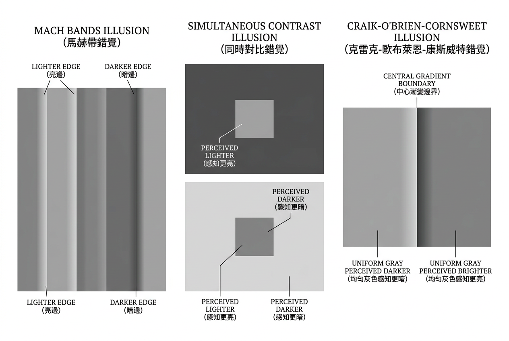

本讲义基于 Steve Marschner & Peter Shirley 所著《虎书》（Fundamentals of Computer Graphics）第5版第19章（p.543-586）视觉感知。
图形学的最终评判者是人眼——对比敏感度 CSF、韦伯-费希纳-斯蒂文斯三大定律、马赫带/同时对比/Cornsweet效应、Gestalt 原则、注视点渲染。
本版插画采用 Guizang 材质插画风格重新绘制。
视觉被公认为是人类最强大的感官。光可以传播很远、速度极快、沿直线行进并与物质发生交互——这些物理特性使视觉能够获取来自远处的大量有用信息，其信息量远超听觉、触觉、嗅觉和味觉所提供的信息（图19.1）。光照无处不在——白天自不必说，夜晚也有月光、星光和人造光源。表面反射入射光能的可观部分，并且反射方式因材料种类和表面形状而呈现特征性的差异。光（大多）沿直线传播的事实使得视觉能够从远处的位置获取信息。

视觉研究有着悠久而丰富的历史。我们对眼睛的知识大多可追溯到17世纪哲学家和物理学家的研究。自19世纪中叶起，感知心理学界展开了对视觉现象学的探索，提出了关于视觉如何工作的模型。20世纪中叶见证了现代神经科学的诞生——研究者开始同时探究单个神经元的精细工作机制以及大脑和神经系统的大尺度架构组织，而神经科学的相当部分研究集中在视觉领域。近年来，计算机科学通过提供精确描述视觉计算假设模型的工具，以及允许对计算机视觉程序进行实证检验，进一步促进了对视觉感知的理解。视觉科学（Vision Science）这一术语专指涉及感知心理学、神经科学和计算分析的多学科交叉研究，由感知心理学家使用术语远端刺激（distal stimulus）指代被观察的物理世界、近端刺激（proximal stimulus）指代视网膜图像。在计算机视觉中，通常用"场景"（scene）指代外部世界，用"图像"（image）指代场景在感光平面上的投影。采用这一术语体系，视觉的功能即是由近端刺激生成对远端刺激某些方面属性的描述。当产生的描述准确反映真实世界时，视觉感知被称为真实的（veridical）。在实践中，将这些描述孤立考虑意义不大；更恰当的方式是将视觉放在其服务的运动和认知功能的语境中来理解。
计算机图形学的终极目标是生成供人类观察者观看的图像。不借助视觉感知科学的知识，几乎不可能设计和实现高质量的图形系统。本章仅能提供视觉感知关键要点的概述，读者应谨慎避免对所介绍的内容过度泛化。更深入的视觉感知研究可参考Wandell（1995）和Palmer（1999）；Gregory（1997）和Yantis（2000）提供了额外的有用信息。一本好的计算机视觉参考书如Forsyth和Ponce（2002）也很有帮助。值得注意的是，尽管视觉研究已有超过150年的密集探索历史，我们对视觉机制的许多方面的了解仍然极为有限且不完美。
生活类比：视觉感知之于图形学，如同听觉特性之于音响工程。 再昂贵的音响，如果不对人耳的等响度曲线进行补偿，听起来也不过平平。同样，显示设备无论如何也无法复现自然场景的全部光能——视觉系统只对光的变化模式敏感而非绝对值，这使得图形显示成为可能。
心理物理学的诞生——从韦伯到费希纳：视觉感知的定量化研究始于19世纪中叶一段横跨生理学与哲学的科学传奇。1834年，德国莱比锡大学的解剖学与生理学教授恩斯特·海因里希·韦伯（Ernst Heinrich Weber, 1795-1878）进行了一系列如今被视为心理物理学奠基之作的实验。韦伯让受试者手持两个重量不等的物体，要求他们判断哪个更重。他发现：当基准重量为100克时，需要增加约3克（即3%的增量）受试者才能可靠地察觉到差异；但当基准重量改为200克时，则需要增加约6克才能检测——百分比（3%）保持不变。这一发现后来被推广至多种感官模态，形成了著名的韦伯定律：ΔI/I = k，即可察觉的刺激增量与刺激本身的强度之比为常数。韦伯对触觉（重量辨别、两点辨别阈）和视觉（线段长度比较）的系统研究发表于1834年的拉丁文论文《De Tactu》（论触觉）及其1846年的德文扩展版《Der Tastsinn und das Gemeingefühl》（触觉与一般感觉）中。值得注意的是，韦伯本人从未将他的发现表述为数学"定律"——他只是忠实地记录实验数据中显现的比例关系。
将韦伯的观察系统化为数学定律并由此创立一门全新学科的工作，由韦伯的学生古斯塔夫·西奥多·费希纳（Gustav Theodor Fechner, 1801-1887）完成。费希纳是一位独特的学者——他既是物理学家（在莱比锡大学任物理学教授期间，他发表了大量关于电学和色觉的论文），也是一位哲学家（以笔名"Dr. Mises"发表讽刺作品），更是一位深受神秘主义影响的自然哲学思想家。费希纳的核心洞察是：如果韦伯定律描述了物理刺激与可检测的感知差异之间的关系，那么通过把这些最小的感知差异视为"感知的基本单位"，就可以从物理测量中量化地推导出感知量的大小。他将这一推导过程称为"心理物理学"（Psychophysics）——一门研究物理世界与感知体验之间精确数量关系的科学。1860年，费希纳出版了其里程碑式的巨著《心理物理学纲要》（Elemente der Psychophysik），在书中他不仅推导出了著名的对数定律（本文第19.2.4节），还系统性地建立了三种心理物理学方法——极限法、恒定刺激法和平均差误法——这些方法至今仍是感知实验的标准工具。费希纳的工作标志着心理学从哲学思辨转入实验科学的转折点。有趣的是，费希纳本人直到晚年都认为精神与物质是同一终极实在的两个方面，并将心理物理学视作证明这一哲学观点的工具；但后世科学界接受的是他的测量方法和数学形式化，而抛弃了其形而上学框架。德国心理学家威廉·冯特（Wilhelm Wundt）之后吸收了费希纳的量化方法论而在1879年建立了第一个实验心理学实验室——这被认为标志着现代心理学的正式诞生。
视觉感知对计算机图形学的工程价值：理解视觉感知不仅是理论兴趣——它为图形学中的多项核心工程决策提供了量化基础。下表概述了三个代表性应用领域中的感知-工程对应关系：
| 工程问题 | 感知原理 | 具体应用方式 |
|---|---|---|
| 渲染终止条件 | 韦伯定律 + CSF：人眼检测对比度差异的能力随空间频率和亮度水平变化。低于CSF阈值的图像差异在感知上不存在 | 路径追踪器在像素亮度变化低于JND（约1%×当前亮度）时终止采样；自适应采样算法将更多样本分配到高对比度（==高感知显著性）的区域，而非均匀分配 |
| 压缩伪影阈值 | CSF的空间频率选择性 + 空间频率通道的掩蔽效应：高频纹理区域中，量化误差被纹理所掩蔽；平坦渐变区域中，同样大小的误差会因缺少掩蔽而呈现为明显的带状伪影（banding） | JPEG量化表按频率分量差异化量化——高频系数的量化步长可以比低频大10倍以上。H.264/H.265编码器利用"感知亮度梯度"检测banding区域并自动分配更多比特 |
| LOD切换距离 | 偏心度-分辨率衰减：fmax(e) = fmax(0)/(1+e/e2)。当物体投影在视网膜的偏心度增加时，其细节的可感知性急剧下降 | 游戏引擎中，远处物体的网格简化倍数和纹理mipmap级别根据其投影在屏幕上的尺寸（等价于偏心度）自动调整。在注视点渲染中，切换逻辑从"屏幕距离"改为"注视点距离"，实现更激进的优化 |
这三类应用揭示了一个共同的设计哲学：计算资源应该被分配到感知上最重要的地方，而非物理上最复杂的地方。对于图形学工程师而言，视觉感知不是可选的"软知识"——它是设计所有渲染、压缩和显示算法的必要量化基础。正如本章将反复展示的，几乎所有重大的图形学效率增益都来自于对人类视觉局限性的巧妙利用。
想一想：视觉系统的目标是从视网膜上的二维光模式推断出三维世界的属性。这不是一个简单的"测量"过程——相同的光模式可能对应完全不同的物理场景（例如，远处的白墙和近处的灰墙可能产生等量的视网膜光强）。这个被称为逆光学的问题为什么在原则上没有唯一解？视觉系统依靠哪些"额外假设"来解决这个不确定性？
视觉系统基于入射光的特性来创建对视觉环境的描述。因此，理解人类视觉系统实际能够检测到入射光的哪些特性至关重要。关于人类视觉系统的一个关键观察是：它主要对光的模式敏感，而非对光能量的绝对量敏感。眼睛并非像光度计那样工作。相反，它检测成像在视网膜上的光的空间、时间和光谱模式，而关于这些光模式的信息构成了所有视觉感知的基础。
这种对空间和时间上光照变化的敏感性具有明确的生态效用。能准确感知环境变化对我们的生存至关重要。有时人们说视觉的主要目标是支持进食、避免被食、繁殖以及运动中避免灾难。将视觉视为目标导向的活动通常很有用，但需要在更细致的层面上进行。一个测量光能变化而非能量本身大小的系统在工程上也更加合理：它使得在更大的光强范围内检测光模式变得更加容易。计算机图形学领域应该庆幸视觉以这种方式运作。显示设备在投射光的能力和动态范围上受到物理限制，无法达到自然场景的水准。如果图形显示需要产生与对应物理世界完全相同的光模式，它将是无效的。幸运的是，显示设备只需要能产生与现实世界相似的空间和时间变化模式即可。
想一想：为什么动物进化出了对光的变化模式而非绝对光强敏感的视觉系统？如果眼睛像光度计一样仅测量每个点的绝对亮度，这对动物在复杂自然环境中生存会带来什么根本性问题？
在明亮光线下，人类视觉系统能够分辨由高对比度平行明暗条纹组成、精细至50–60周期/度的光栅（gratings）。此处一个"周期"由一对相邻的明暗条纹组成。作为对比，目前最好的LCD计算机显示器在正常观看距离下能显示的精细度约为20周期/度。在明亮光线下，人眼可检测到的最小边缘对比度差异约为跨越此边缘的平均亮度值的1%。在大多数8位显示器上，由于灰度级到实际显示亮度的映射关系，在整个亮度范围的一部分区间内单个灰度级的差异通常是可被察觉的。
描述视觉系统检测精细模式的能力（视锐度，visual acuity）和检测亮度变化的能力比描述相机或类似图像获取设备的相应能力要复杂得多。如图19.2所示，人类视觉中对比度与锐度之间存在交互效应。在图中，模式尺度从左到右递减，同时对比度从上到下递增。如果以正常距离观看，将明显看出可看见某图案的最低对比度是该图案的空间频率的函数。这是对比敏感度函数（Contrast Sensitivity Function, CSF）的核心发现。
感知对比度可以用数学方式精确定义。最常用的是Michelson对比度：
C = (Lmax − Lmin) / (Lmax + Lmin)
其中Lmax和Lmin分别为光栅图案中的最大和最小亮度。对于正弦光栅（亮暗平滑过渡），这一定义最为适用。对于简单边缘（阶梯状亮度变化），则使用Weber对比度CW = ΔL / L，其中ΔL为边缘两侧的亮度差，L为平均亮度。
从世界中某特定表面点到达眼睛的光的强度 L、照射该表面点的光强度 I 以及该点处的表面反射率 R 之间存在线性关系：
L = α · I · R (19.1)
其中α是比例常数。该公式表达了物理光照、表面反射和到达眼睛的光强度之间的基本线性关系。视觉系统的关键难题在于：仅能获取L，却需推断I和R。该方程的欠定性驱动了亮度恒常性（lightness constancy）：视觉系统消去光照I的影响以估计反射率R。一种启发式是用局部对比替代绝对亮度：
R ≈ L / Lavg （亮度恒常性的局部对比启发式）
——这是所有视觉感知和图形渲染的物理出发点。
Michelson对比度的完整推导与物理意义：Michelson对比度（以美国物理学家Albert A. Michelson命名，他因精确测量光速和Michelson-Morley实验而闻名，但其在视觉科学中的贡献同样重要）之所以成为视觉科学中定义条纹光栅对比度的标准，是因为它完美匹配了正弦光栅的物理特性。对于一个在空间上按正弦规律变化的光强度分布 L(x) = L_mean + (L_max - L_min)/2 · sin(2πfx)，其中 L_mean = (L_max + L_min)/2 为平均亮度，振幅 A = (L_max - L_min)/2。Michelson对比度 C = A / L_mean = (L_max - L_min)/(L_max + L_min) 恰好等于振幅与均值的比值，取值范围从0（完全均匀）、到1（暗条纹亮度=0）。这个公式的美妙之处在于：当光栅在光学上被衰减（例如穿过散射介质或经过瞳孔的小孔径衍射），其平均亮度和振幅以相同的比例衰减，因此对比度保持不变——这反映了视觉系统对对比度（而非绝对亮度）敏感这一核心事实的物理基础。
人类可检测的最小对比度阈值——从中心凹到周边视野的梯度：对比敏感度并非在视网膜各处均等——它随偏心度剧烈变化。在严格控制条件的心理物理实验中，使用最优空间频率的光栅（约3-5 cpd），研究者测量了不同视网膜位置的可检测对比度阈值：
| 视网膜位置 | 偏心度 | 最小可检对比度阈值 | 对应对比敏感度 | 生理基础 |
|---|---|---|---|---|
| 中央凹（Fovea） | 0° | ~0.5% | ~200 | 高密度锥细胞，极小的汇聚比（1:1—1:2） |
| 近中央凹（Parafovea） | 2° | ~1% | ~100 | 锥细胞密度开始下降，汇聚比增至约1:3 |
| 近周边（Near Periphery） | 5° | ~3–5% | ~20–33 | 锥细胞密度降至中央凹的约1/10 |
| 中周边（Mid Periphery） | 10° | ~8–15% | ~7–12 | 杆细胞主导，大量汇聚（1:10—1:100） |
| 远周边（Far Periphery） | 30° | ~20–40% | ~2.5–5 | 极大量汇聚，仅能感知粗略的明暗变化 |
| 极限周边 | 60°–90° | > 50% | < 2 | 仅有对运动敏感的弱视觉残余 |
这一偏心的对比敏感度梯度直接决定了注视点渲染可以节省的计算量——远离注视点处，即使大幅降低渲染分辨率和对比度精度，也无法被视觉系统感知。从中央凹（0°）到仅约10°偏心度处，最小可检测的对比度已经恶化了20倍以上。
显示器Gamma与感知亮度非线性——从CRT阴极射线管到现代显示科学：人类视觉系统对物理亮度的感知是对数或幂律压缩的（见§19.2.4和§19.2.5），但大部分数字图像的像素值却是线性编码的（0=黑, 255=白等间距）。如果直接将这些线性编码的像素值发送到显示器，暗区的量化阶梯在感知上会产生巨大的跳跃（因为暗区的一个数字级别对应了更大的感知增量），而亮区则浪费了精密的编码（因为亮区的多个连续编码级别在感知上无法区分）。解决这一失配的关键手段是Gamma校正（gamma correction）。物理显示器（尤其是CRT阴极射线管）具有天然的幂律电压-亮度响应：发射亮度 L ≈ V^γ，其中 γ ≈ 2.2–2.5（CRT的电子枪加速电压与荧光粉发射之间的物理非线性）。如果将像素值在发送给显示器前经过逆幂律变换 V_out = V_in^(1/γ)，则可同时实现两个目标：(1) 补偿显示器的物理非线性，使像素值到显示亮度接近线性关系；(2) 将更多的编码精度分配到暗区（因为幂指数 < 1 时，暗区的输入值被'拉伸'到更宽的输出范围），恰好匹配了视觉系统对暗区变化更敏感的心理物理学特性。这一历史性的巧合——CRT显示器的物理非线性恰好与视觉感知的幂律压缩形成互补——是早期数字图像处理发展中的一大幸事。现代LCD和OLED显示器已不具有CRT的自然γ特性，但Gamma校正作为行业标准被保留下来，并通过sRGB/IEC 61966-2-1标准严格定义了参考编码曲线——其有效γ值约为2.2，等效于视觉感知的斯蒂文斯压缩指数约为0.45。
想一想：公式(19.1)告诉我们到达眼睛的光是光照I和反射率R的乘积。这意味着相同的视网膜光强L可以由"强光照+低反射率的暗表面"或"弱光照+高反射率的亮表面"产生。视觉系统如何区分这两种情况？这引出了亮度和明度的核心区别。
人类视觉系统对不同空间频率的光栅模式的敏感度存在巨大差异。这一关系由对比敏感度函数（Contrast Sensitivity Function, CSF）完整描述。CSF通常以空间频率为横轴（单位：周期/度，cpd），以对比敏感度为纵轴——对比敏感度定义为阈值对比度的倒数（1/对比度阈值）。阈值越小，敏感度越高。
在明亮光线下（明视觉条件），CSF呈现典型的带通（band-pass）特性：
在暗光条件下（暗视觉），CSF变为低通（low-pass）特性：杆细胞系统有更大的空间汇聚（多个杆细胞的信号在到达神经节细胞之前被汇聚合并），这牺牲了空间分辨力以换取更高的光敏感度。因此，暗视觉下的CSF没有低频衰减——对所有低于截止频率的模式，敏感度大致相等或随频率单调下降；截止频率也大幅降低——从明视觉的约60 cpd降至约5–10 cpd。
CSF的完整数学描述通常使用以下参数化公式（Mannos & Sakrison, 1974; Daly, 1993）：
CSF(f) = 2.6 · (0.0192 + 0.114·f) · exp(−(0.114·f)1.1)
其中f为空间频率（cpd）。这一公式的形式反映了两个对抗过程的乘积：线性上升项代表视觉系统对中等频率信号的放大效应（侧抑制的去相关作用）；指数衰减项代表光学系统的衍射极限和锥细胞采样的Nyquist限制在高频端的联合截断效应。
空间频率在视觉科学中的标准单位是cpd（cycles per degree，周期/度视角）。它表示在1°视角的视野范围内明暗交替的完整周期数。使用视角而非物理长度作为单位的原因在于—视网膜上对应的图像大小取决于观察距离。cpd的计算公式为：
fcpd = (π / 180) · d · fcycles/mm
其中d为观察距离（mm）。在典型桌面显示器使用场景下（d ≈ 500–600 mm），以下转换关系可供参考：
| 像素密度 | 显示器类型 | ≈ cpd（60cm距离） |
|---|---|---|
| ~96 ppi | 24" 1080p | ~15 cpd（Nyquist） |
| ~163 ppi | 27" 4K | ~25 cpd（Nyquist） |
| ~220 ppi | 27" 5K | ~34 cpd（Nyquist） |
| 人类中央凹极限 | — | ~50–60 cpd |
这表明即使是高端的5K显示器，在正常观看距离下的可显示频率仍低于人类中央凹视觉的理论极限——这为注视点渲染提供了硬件层面的合理性。此外，人类视觉还展现出超锐度（hyperacuity）——能检测远小于单个光感受器尺寸的空间偏移：
δvernier ≈ 2–5 arcsec ≈ 0.0006–0.0014° （Vernier超锐度阈值）
CSF在时间域的对应物——时间对比敏感度函数（Temporal CSF）描述了对闪烁和运动的敏感度随时间频率的变化：
TCSF(ft) ∝ exp(−(ft/f0)²) （峰值约10 Hz；融合约50–60 Hz）
CSF曲线参数对三个主要环境因素敏感：(1) 平均亮度：随着平均亮度降低，CSF从带通形状转变为低通形状，峰值频率向低频移动；(2) 偏心视角：在偏离中央凹的周边视野，CSF的高频截止频率显著降低，且峰值敏感度也随之下降——这就是注视点渲染的核心物理依据；(3) 时间频率：对于闪烁或运动的模式，CSF还有一个时间维度——时间对比敏感度函数在约10 Hz处达到峰值，在约50–60 Hz以上完全融合。
生活类比：CSF → 听力频率响应。 对比敏感度函数就像人耳的等响度曲线——你对中频声音（约1-4 kHz）最敏感，正如眼睛对中等空间频率（约3-5 cpd）最敏感。极低频（粗大图案）和极高频（细密纹理）都需要更高的"音量"（对比度）才能被感知。听力测试测量你能听到多小的声音，CSF测量你能看到多低的对比度——两者都是"灵敏度频谱"。
Campbell & Robson 1968年经典实验——空间频率通道理论的奠基：在脑电波（EEG）和单细胞记录技术尚不成熟的年代，剑桥大学的Fergus W. Campbell与John G. Robson通过一项设计极为精妙的心理物理学实验，为"视觉系统由独立的、频率调谐的空间频率通道组成"这一革命性理论提供了决定性证据。他们的实验范式至今仍是视觉科学教学的经典案例。实验使用正弦光栅（亮暗按正弦规律平滑变化的条纹图案）作为刺激。受试者注视屏幕上的光栅，实验者逐步降低光栅的对比度，直到受试者报告"刚刚看不到"光栅的任何痕迹——这个临界点记录为该空间频率和该受试者的对比度阈值。通过变化光栅的空间频率（从极粗的~0.1 cpd到极细的~50 cpd），Campbell和Robson绘制了完整的对比敏感度函数曲线。但实验中最重要的发现来自选择性适应（selective adaptation）范式：先让受试者注视高对比度的特定频率光栅（如7 cpd）持续数分钟，使视觉系统对这一频率"疲劳"（即敏感度暂时性下降），然后立即测量全频段的CSF。结果发现：敏感度仅在适应频率及其附近频率（约±1个倍频程范围内）有显著下降，远离适应频率的敏感度几乎不受影响。这意味着不同空间频率的光栅由不同的、独立的神经通道处理——如果只有一个通用的"对比度检测器"，适应任一频率都应该降低所有频率的敏感度，而非仅影响特定频率范围。这一"双重分离"的实验逻辑令人信服地证明了独立空间频率通道的存在。Campbell和Robson的论文（Journal of Physiology, 1968, 197: 551-566）被评为20世纪视觉科学最重要的论文之一——它不仅开辟了空间频率分析的全新研究范式，还直接启发了后来小波变换和多尺度图像分解等信号处理技术的发展。
CSF在图形学中的四大工程应用：对比敏感度函数不仅是视觉科学的理论工具——它直接转化为图形学中多项关键的工程决策：
| 应用领域 | 利用的CSF特性 | 具体工程实现 | 感知增益 |
|---|---|---|---|
| JPEG量化表设计 | 视觉对高频分量不敏感。DCT变换后，各频率系数可被不同程度地量化——高频系数允许更大的量化步长 | JPEG标准量化表将高频DCT系数的量化步长设为低频的5-10倍。例如，8×8块中(0,0)DC系数的量化步长为16，而对角方向最高频系数(7,7)的步长为99 | 在保持几乎相同主观质量下，文件大小压缩至原始的1/10—1/20 |
| 感知纹理合成 | 视觉对高频纹理细节的相位信息不敏感（仅对幅值谱敏感）。两个具有相同空间频率幅值谱但不同相位谱的纹理在感知上通常难以区分 | Heeger-Bergen纹理合成算法（1995）通过匹配目标纹理的金字塔滤波器组响应（在多个尺度和朝向上）来合成新纹理。只匹配幅值统计量而随机化相位，但仍产生逼真的纹理 | 纹理合成计算量降低一个数量级，同时保持感知同质性 |
| 自适应LOD（细节层次）选择 | fmax(e)随偏心度衰减。远离注视点的物体即使投影到视网膜上也只激发低频通道，无法感知高频细节 | 游戏引擎中，基于物体到视点的屏幕投影角度，自动选择合适的网格LOD。近处：精细网格+高分辨率纹理。远处：简化网格+mipmap低级别 | GPU几何负载降低50-80%，像素着色负载降低30-60%，未察觉质量下降 |
| 时域超采样（TAA/DLSS） | 时间CSF：视觉对高频闪烁有约50-60 Hz的融合阈值，但对低频运动抖动极敏感 | 时间抗锯齿（TAA）将历史帧的样本重投影到当前帧，通过时间积累产生等效的更高采样率。NVIDIA DLSS对运动向量进行智能预测，在运动区域自适应降低时域混合权重以避免鬼影 | 等效超采样倍率达2×-4×，在感知上逼近原生高分辨率渲染 |
CSF峰值偏移——从暗视到明视的平滑过渡：CSF的带通形状并非固定不变——它随平均亮度的变化经历从暗视低通到明视带通的连续形态转变。在极低的暗视觉条件下（< 0.001 cd/m²），CSF仅是一个低通函数——没有低频衰减，峰值频率趋近于0（因为杆细胞信号的广泛汇聚消除了中小型感受野提供的带通滤波特性，对所有可感知空间频率，更粗的图案始终比更细的图案更容易被检测）。峰值敏感度的绝对值也大幅下降——暗视觉下的最高敏感度约为明视觉的1/100。随着亮度增加到中间视觉（mesopic）范围（~0.01–1 cd/m²），中心-周边拮抗感受野开始产生可测量的低频衰减，CSF的峰值开始从频域的"0"（即最低频率）移动到约1–2 cpd处。当亮度进入明视觉范围（> 1 cd/m²），锥细胞的紧密排列和低汇聚比使带通特性完全发展——峰值移至约3–5 cpd，且曲线的总体幅度（对比敏感度）达到最高，峰值处可达200以上。这一亮度依存的CSF形态变化的生理基础在于：杆细胞通路具有广泛的信号汇聚（用于最大化光敏感度），代价是空间分辨力的牺牲和低频衰减的缺失；锥细胞通路具有较小的汇聚比（用于最大化空间锐度），其中心-周边拮抗结构自然产生带通滤波特性。因此，"暗视→低通，明视→带通"这一规律直接反映了视网膜从"检测是否有光"到"识别光的具体模式"的功能切换——这在进化上具有深刻的适应意义：在黑暗中，任何形式的"有光vs无光"对比都是致命的生存信号，精细的纹理辨别则毫无用处；而在明亮环境中，物体的纹理、质感和精细轮廓提供了识别和交互所需的关键信息。
想一想：为什么CSF是带通型而非低通型？低通意味着低频最好、高频衰减——这似乎更符合直觉（粗大的图案应该最容易看到）。为什么视觉系统反而对极低频图案不敏感？
如前所述，如果两个相邻区域的亮度差异至少达到平均亮度的1%，人类即可察觉这一差异。这就是韦伯定律（Weber's law）的一个实例：一个刺激的最小可觉差（just noticeable difference, JND）与该刺激的强度之间存在恒定比率：
ΔI / I = k1 (19.2)
其中 I 是刺激强度，ΔI 是最小可觉差的强度，k1 是该刺激的特征常数（韦伯分数）。韦伯定律于1846年提出，至今仍是对许多感知效应的有用刻画。在中等亮度范围（约1–1000 cd/m²）的正常光照条件下，亮度辨别的韦伯分数约为0.01–0.02。这意味着：如果背景亮度为100 cd/m²，人需要大约1–2 cd/m²的亮度差异才能感知到变化。韦伯定律的适用范围并非无限——它在极低亮度（受噪声限制，杆细胞主导）和极高亮度（光感受器饱和）两端会显著偏离。更精确的修正形式在分母上加入常数项以覆盖全范围：
ΔL / (L + L0) = kw （修正韦伯定律，含暗光补偿）
其中L0是反映内部噪声等效亮度的常数。不同感官模态的典型韦伯分数：
| 感官模态 | 刺激类型 | 韦伯分数 k | 测量条件 | 研究者/年份 |
|---|---|---|---|---|
| 视觉（亮度） | 亮度辨别，中等范围 | 0.08 | 点光源在均匀背景上 | König & Brodhun, 1889 |
| 视觉（亮度，修正） | 亮度辨别，全范围 | ~0.01–0.02 | 修正韦伯形式 ΔL/(L+L₀)=k | |
| 视觉（对比度） | 光栅对比度辨别 | 0.1–0.3 | 正弦光栅，超阈值对比 | Legge & Foley, 1980 |
| 视觉（线段长度） | 线段长度比较 | 0.02 | 同时呈现，中央凹视野 | Weber, 1834 |
| 听觉（响度） | 声音强度，1000 Hz纯音 | 0.1 | 中等声压级（~40–60 dB） | Riesz, 1928 |
| 听觉（频率） | 频率辨别，1000 Hz | 0.002 | 高度训练受试者 | Wier et al., 1977 |
| 触觉（重量） | 人手抬举重量 | 0.02 | 单手上举，标准抬举速度 | Weber, 1834（原始实验） |
| 触觉（压力） | 皮肤压觉 | 0.14 | 前臂皮肤，von Frey毛发 | |
| 触觉（振动） | 振动幅值，250 Hz | 0.04 | 指尖，Pacinian小体介导 | Goff, 1967 |
| 味觉（咸味） | NaCl浓度 | 0.20 | 水溶液，舌前2/3 | Schutz & Pilgrim, 1957 |
| 味觉（甜味） | 蔗糖浓度 | 0.15 | 水溶液 | |
| 味觉（酸味） | 柠檬酸浓度 | 0.22 | 水溶液 | |
| 痛觉（电击） | 电刺激强度 | 0.01 | 皮肤表面电极 | |
| 温度觉 | 冷温辨别（偏离皮肤温度） | 0.03 | 金属棒温差刺激 | |
| 嗅觉 | 特定气味分子浓度 | 0.25–0.50 | 正丙醇、丁醇等标准气味剂 | Cain, 1977 |
从上表可以看出，韦伯分数最小的感觉模态（即对变化最敏感的）是频率辨别（k≈0.002——高度训练者可区分仅0.2%的音高差异）和电击痛觉（k≈0.01——仅需1%的物理变化即可察觉，这具有显而易见的生存价值）。可见光亮度辨别（k≈0.08—0.01）和重量辨别（k≈0.02）紧随其后。味觉和嗅觉的韦伯分数最大（k≈0.15—0.50），反映了化学感觉系统需要在宽广的浓度范围内工作且通常不需要精细辨别。值得注意的是，频率辨别的韦伯分数（0.002）比亮度辨别小数倍到几十倍——这意味着人类的听觉系统在频率（音高）的分辨力上远优于视觉系统在亮度的分辨力。这一差异具有深刻的生态学意义：听觉的频率分析对语音识别和声源定位至关重要，而视觉的亮度辨别只需要在适应性范围内足够即可——自然环境中同一表面在不同光照下的亮度可以变化几个数量级，因此过高的亮度辨别精度是浪费的。
韦伯定律失效的两个极端范围：尽管韦伯定律在中等刺激强度范围内对几乎所有感官模态都近似成立，但它在刺激强度的两个极端明显失效。(1) 极低强度端——绝对阈值噪声限制：当刺激强度接近绝对检测阈值 I₀ 时（例如非常微弱的光点、几乎听不到的微小声音），ΔI 不再与 I 成比例增长——而是趋近于一个固定常数（由感受器和神经系统的内部噪声决定）。在视觉系统中，这一"噪声地板"对应于暗视觉条件下单个杆细胞的热异构化事件（thermal isomerization）——即使没有光子，视紫红质分子偶尔也会自发激活，产生与真正光子吸收无法区分的信号。这意味着在阈值附近，修正韦伯定律 ΔI/(I + I₀) = k 中分母上的 I₀ 项变得不可忽略。(2) 极高强度端——感受器饱和：当刺激强度高到使感受器响应趋于饱和时（例如直接注视太阳或将耳朵置于极高声压中），ΔI 必须非常大才能产生额外的可检测输出变化——因为在饱和区，感受器的响应函数变得平坦，将所有的物理强度变化映射到一个极窄的、接近最大值的输出范围内。在视觉中，这对应于光感受器中光色素的"漂白"（bleaching）——当绝大多数视色素分子已被光子激活并处于再生前的非活性状态时，额外的光强几乎不产生额外的电信号，导致韦伯分数急剧增大。在实际的图形学工程中，第一个失效范围（暗端）决定了显示设备最小可用的亮度级别——低于此级别，显示信号被视觉系统内部噪声淹没；第二个失效范围（亮端）限制了HDR显示器的峰值亮度——超出此亮度，增加更多流明数也不产生额外的感知差异。这就是为什么8位sRGB编码在暗区容易出现带状伪影（因为暗区的编码步长对应着远大于JND的感知差异），而10位或12位编码（HDR）能有效解决这一问题——不是因为"更多的颜色"，而是因为"在暗区有更细密的编码阶梯"。
想一想：韦伯定律告诉我们 ΔI/I 为常数。如果房间已有10盏灯亮着，需要多开1盏才能注意到变亮；但已有100盏时，需要多开10盏。这意味着在计算机图形学的色调映射中，暗区的量化误差比亮区更容易被察觉——这如何指导我们的比特深度分配策略？
1860年提出的费希纳定律（Fechner's law）对韦伯定律进行了推广，使其能描述任何感官体验的强度，而不仅仅是JND：
S = k2 · log(I / I0) (19.3)
其中 S 是感官体验的感知强度，I 是物理刺激强度，I0 是绝对阈值——恰好能被检测到的最小物理刺激强度，k2 是该刺激特定的缩放常数。费希纳定律的推导基于以下假设：每个JND贡献一个等量的主观增量 dS。结合韦伯定律 dI/I = 常数，有 dS = k · (dI/I)。积分即得对数关系。
推导过程： dS = kf · (dI / I) （每个JND = 等量主观增量） S = kf · ∫ (1/I) dI = kf · ln(I) + C 当 I = I0（绝对阈值）时 S = 0 ⇒ C = −kf · ln(I0) ∴ S = kf · ln(I / I0)
费希纳定律的核心预测是：物理刺激按几何级数（等比）增长时，主观感知按算术级数（等差）增长。例如，亮度从10 → 20 → 40 → 80 cd/m²的每一步倍增，在感知上都是等距变化。
在图形学中，对数色调映射（将HDR物理亮度通过log变换压缩到LDR显示范围）和感知均匀颜色空间（CIELAB的L*通道）都直接继承自费希纳的洞察。
从韦伯定律到费希纳定律的完整推导：费希纳定律并非独立于韦伯定律的新定律——它是从韦伯定律出发、加上一个关于"感知单位"的基本假设而推导出的。推导步骤如下：第一步——韦伯定律 ΔI/I = k_w（常数）描述了物理刺激强度 I 与恰好可察觉的物理增量 ΔI 之间的关系。第二步——费希纳的"等量JND假设"（有时称为费希纳公理）：每个JND（最小可觉差）在主观感知量上贡献一个等量的增量 dS。这是一个根本性的哲学假设——费希纳认为感知量可以被"原子化"为一个个不可再分的最小感知单位，就像物质由原子构成一样。第三步——将韦伯定律代入这一假设：dS ∝ dI/I（感知增量正比于相对物理增量）。第四步——积分求总感知量：从绝对阈值 I₀ 到当前强度 I 积分：S = k·∫(1/I')dI'（从 I₀ 到 I）= k·[ln(I) - ln(I₀)] = k·ln(I/I₀)。由于自然对数与常用对数仅差一个常数因子（ln x = ln 10 · log₁₀ x ≈ 2.303·log₁₀ x），这等价于 S = k'·log₁₀(I/I₀)。这就是费希纳对数的最终形式。需要注意的关键是：费希纳推导出的是对数关系，而非韦伯比例关系的直接重复——对数来自于"第一步中的比例常数 + 第二步中每个JND等量贡献"这两个假设的联合。如果第一步的韦伯定律不成立（它确实在极低和极高强度端失效），整个推导链在相应的范围内也就失效了。
对数感知在图形学中的两个直接应用：费希纳对数定律虽然在后来的直接量值估计实验中被显示为不完全准确（参见下节的斯蒂文斯幂律），但它在图形学工程中仍然提供了两个极为有用的设计原则。 (1) 亮度编码为何用对数？——几乎所有现代图形管线在存储和传输视亮度（luminance）相关的数据时都使用某种形式的对数编码。位深度有限的数字图像（8位 = 256级，10位 = 1024级）如果采用等间距（线性）量化，按韦伯定律，在暗区（~1 cd/m²）一个量化阶梯对应约0.08 cd/m²，这远大于暗区实际需要的约0.01-0.08 cd/m²的阈值（取决于局部适应状态）——结果是暗区会出现明显的带状伪影。而如果在亮区（~100 cd/m²），一个量化阶梯对应约0.08 cd/m²的绝对变化，但这仅为亮度的0.08%——远低于韦伯定律预测的约1-8%的JND，导致亮区有很多编码阶梯完全浪费在不可感知的差异上。如果采用对数编码——即等间距的对数亮度级别——每个编码阶梯都对应着一个大致相等的感知增量。这是远程通信、广播视频（Gamma对数编码）和HDR色调映射（对数域压缩）的共同数学基础。以实际数字为例：线性8位编码的256级中，最暗的1/4（0-63）覆盖了感知范围的约60%，而最亮的1/4（192-255）覆盖了感知范围的不到5%——这是一种极为浪费的编码方式。对数编码重新分配编码精度，使"暗者得其所需，亮者不占过多"。 (2) HDR色调映射为何以对数平均为Key？——大多数摄影学和图形学的色调映射算法（如Reinhard et al. 2002的经典摄影色调映射器）在将HDR场景的动态范围（可达10⁸:1或更高）压缩到LDR显示范围（约10³:1）时，第一步是计算场景的对数平均亮度 L̄_w = exp[(1/N)·Σ ln(L_w(x,y))]（即所有像素的几何平均），然后以此对数平均值为"key"来缩放整个场景的曝光。这一做法的感知合理性直接来源于费希纳的对数定律：对数平均相当于场景在"感知亮度轴"上的算术平均——它捕捉的是场景的"整体感知明暗感"，而非受少数极亮光源（如太阳、镜面高光）主导的算术平均。使用算术平均的方法会让白天的户外场景变得过于昏暗（因为太阳高光将一个像素的平均亮度拉高），而对数平均则可有效地将场景Key到一个视觉上合理的"中等亮度感"。
当前实践使用幂函数来建模感知强度与实际刺激强度之间的关联（斯蒂文斯幂律，Stevens' law）：
S = k3 · Ib (19.4)
其中 S 和 I 同上，k3 是另一个缩放常数，b 是该刺激的特征指数。对于视觉相关的大量感知量，b < 1。CIE L*a*b*颜色空间（详见第18章）使用修改版的斯蒂文斯幂律来刻画亮度值之间的感知差异。
请注意，在前两种刺激感知强度描述方式中，以及在 b < 1 的斯蒂文斯幂律中：当刺激的平均强度较小时，刺激的物理变化产生的感知效果比该刺激强度较大时的相同物理变化更大。
Stevens��值估计法的实验范式：斯坦利·史密斯·斯蒂文斯（Stanley Smith Stevens, 1906-1973）——哈佛大学心理声学实验室的创建者——对费希纳的间接JND方法提出了深刻的批判。斯蒂文斯认为：费希纳并没有直接测量"感知强度"——他只是测量了辨别阈值然后进行数学推导。斯蒂文斯建立了一种更直接的测量方式，即量值估计法（magnitude estimation）。其实验范式如下：实验者首先向受试者呈现一个"标准刺激"（modulus）——例如一个中等亮度的光或一个中等响度的声音——并告诉受试者"这个刺激的主观强度请你记为10"。然后实验者随机呈现一系列不同强度的测试刺激（有时是标准刺激的0.1倍，有时是10倍、100倍等），要求受试者为每个测试刺激给出一个数字，该数字应比例于该刺激相对于标准刺激的主观感知强度。例如，如果受试者觉得某个测试刺激看起来是标准的两倍亮，他应该回答20；如果觉得是一半亮，则回答5。关键是——受试者不允许使用任何物理单位（如cd/m²或dB），只能使用比例于主观感知的任意数字。Stevens对大量��试者的结果取几何平均后，在双对数坐标纸上绘制log(感知估计) vs log(物理强度)，发现数据点几乎完美地落在一条直线上——这意味着感知强度与物理强度的幂函数成正比：log(S) = b·log(I) + log(k) ⇒ S = k·I^b，其中b为直线的斜率。这一发现最初发表于Stevens 1953年的论文及其1957年的标志性综述《On the psychophysical law》（Psychological Review, 64: 153-181），并由此引发了一场被称为"对数 vs 幂函数"的心理物理学世纪之争。
幂指数 b 的物理含义——感知压缩 vs 感知扩张：Stevens幂律 S = k·I^b 中指数 b 与1的大小关系指示了感知系统的"放大或压缩"模式：(a) b < 1——感知压缩（compressive perception）：绝大多数感觉模态的指数都小于1。物理强度的宽动态范围被压缩进一个较窄的感知范围——暗区的物理变化产生较大的感知效果，亮区则在感知上被压制。亮度（b≈0.33—0.5）、响度（b≈0.6）和嗅觉（b≈0.4—0.6）都属此类。压缩型感知相当于一个内置的自动增益控制（AGC）系统。(b) b > 1——感知扩张（expansive perception）：少数感觉模态的指数大于1——物理强度的小幅增加在感知上被"放大"。电击痛觉（b≈3.5）是最极端的例子——物理电流的小幅增加产生急剧放大的疼痛感，这具有显而易见的生存意义：对可能损伤组织的刺激采取"越强越要强力反应"的策略。味觉中的咸味和甜味（b≈1.3）也表现为轻微扩张——帮助检测食物中的盐分和糖分浓度。手指跨度判断（b≈1.3——当我们用手估算物体尺寸时，触觉比视觉夸张了尺寸差异）有助于精细抓取操作。(c) b ≈ 1——感知线性：表观长度的感知指数≈1.0——这说明对线段长度的感知是近乎线性的，为视觉系统提供了一个稳定的"标尺"来估计物体的绝对尺寸和距离。
跨模态斯蒂文斯指数完整表：
| 感觉模态 | 刺激类型 | 指数 b | b vs 1 | 感知效应 | 实验条件/研究者 |
|---|---|---|---|---|---|
| 视觉 | 亮度（点光源，5°暗背景） | 0.5 | < 1 | 感知压缩——平方根关系 | Stevens, 1953 |
| 视觉 | 亮度（大面积，5°白光） | 0.33 | < 1 | 强压缩——立方根关系 | Stevens, 1953 |
| 视觉 | 亮度（极短闪现，< 10 ms） | 0.5 | < 1 | Bloch定律——时间求和 | |
| 视觉（空间） | 线段表观长度 | 1.0 | ≈ 1 | 线性——物理长度=感知长度 | Stevens & Guirao, 1963 |
| 视觉（空间） | 面积（圆、正方形） | 0.7 | < 1 | 面积感知压缩——不同形状的等面积可能感觉不等 | Teghtsoonian, 1965 |
| 视觉（空间） | 体积 | 0.6 | < 1 | 体积感知进一步压缩 | |
| 视觉（时间） | 持续时间 | 1.1 | > 1 | 适度扩张——长时程感觉更长 | Eisler, 1976 |
| 视觉（时间） | 闪烁频率（重复率） | 1.0 | ≈ 1 | 近似线性 | |
| 听觉 | 响度（1000 Hz纯音） | 0.6 | < 1 | sone标度的基础 | Stevens, 1936/1955 |
| 听觉 | 响度（白噪声） | 0.67 | < 1 | 略高于纯音的压缩指数 | |
| 触觉 | 振动（指尖，60 Hz） | 1.0 | ≈ 1 | 近似线性 | Stevens, 1959 |
| 触觉 | 振动（指尖，250 Hz） | 0.6 | < 1 | 高频振动压缩 | |
| 触觉 | 压力（手掌） | 1.1 | > 1 | 轻微扩张 | Stevens, 1961 |
| 触觉 | 重量（手举重物） | 1.45 | > 1 | 感知放大——重物感觉更重 | Stevens & Galanter, 1957 |
| 触觉 | 手指跨度（拇指-食指） | 1.3 | > 1 | 距离感知放大 | Stevens & Stone, 1959 |
| 触觉 | 握力 | 1.7 | > 1 | 推力感知放大 | Stevens & Mack, 1959 |
| 痛觉 | 电击（皮肤，60 Hz交流） | 3.5 | > 1 | 强烈扩张——促快速回避 | Stevens, 1959 |
| 温度觉 | 冷温（金属棒，偏离皮肤温度） | 1.0 | ≈ 1 | 近似线性 | Stevens & Stevens, 1960 |
| 温度觉 | 暖温（辐射热） | 1.6 | > 1 | 暖感适度放大 | |
| 味觉 | 咸味（NaCl） | 1.3 | > 1 | 适度扩张 | Stevens, 1969 |
| 味觉 | 甜味（蔗糖、糖精） | 1.3 | > 1 | 适度扩张 | Moskowitz, 1970 |
| 味觉 | 酸味（柠檬酸） | 1.1 | > 1 | 轻微扩张 | |
| 味觉 | 苦味（奎宁） | 0.8 | < 1 | 轻微压缩——避免毒物饱和警告 | |
| 嗅觉 | 气味强度（正丙醇） | 0.6 | < 1 | 压缩——广泛动态范围 | Cain, 1969 |
| 嗅觉 | 气味强度（丁醇） | 0.4 | < 1 | 更强压缩 |
从表中可以总结出一条普遍规律：对人类生存最关键的警告性感觉（痛觉→ b=3.5；重量辨别→ b=1.45；暖温→ b=1.6）倾向于扩张型（b>1），而需要在大范围环境中持续工作的感觉（亮度→ b=0.33—0.5；响度→ b=0.6；嗅觉→ b=0.4—0.6）倾向于压缩型（b<1）。这种功能分化是感官进化的精确数学表现。
想一想：费希纳定律和斯蒂文斯幂律谁对谁错？事实上它们并不矛盾——费希纳测量的是辨别能力（能否检测到差异），斯蒂文斯测量的是超阈值感知（感知的程度）。在图形学工程中，对数色调映射（费希纳启发）和伽马校正（斯蒂文斯启发，γ≈2.2，等效β≈0.45）两者结合使用。
上述"定律"并非关于感知如何运作的物理约束。相反，它们是对感知系统如何响应特定物理刺激的概括描述。在感知心理学领域，对物理刺激与其感知效应之间关系的定量研究被称为心理物理学（psychophysics）。虽然心理物理定律是经验推导的观察结果而非机制性解释，但如此多的感知效应能被简单的幂函数良好建模这一事实令人瞩目，这可能为理解所涉机制提供了洞见。
1666年，艾萨克·牛顿利用棱镜展示了看似白色的太阳光可以被分解成一个颜色光谱，且这些颜色可以重新组合产生看起来白色的光。现在我们已知光能由一束具有特定波长的光子组成。光的光谱分布是每个波长处光的平均能量的度量。对于自然光照，从表面反射的光的光谱分布因表面材质的不同而显著变化。因此，对此光谱分布的表征可以为环境中表面的性质提供视觉信息。
大多数人在观察世界时都有一种普遍的颜色感。颜色感知取决于光的频率分布，人类的可见光谱范围约为波长370nm至730nm（见图19.11）。视觉系统如何从这一光谱分布中推导出颜色感的问题于1801年首次被系统地研究，并且在此后150年间一直极具争议——如Richard Gregory（1997）所言："颜色视觉研究的历史以其尖刻的争议而著称。"问题在于，视觉系统对光谱分布模式的响应方式与对亮度分布模式的响应方式截然不同。
即使考虑到亮度恒常性等现象，截然不同的空间亮度分布几乎总是看起来截然不同。更重要的是，鉴于视觉系统的目的是由近端刺激产生对远端刺激的描述，感知到的亮度模式至少近似地对应着环境中表面亮度的模式。颜色感知则不然：许多截然不同的光谱分布可以产生对任意特定颜色的感觉。相应地，对某表面为某种颜色的感觉，几乎不提供关于该表面光的光谱分布的直接信息。例如，由适当选定强度的700nm和540nm波长光的组合所产生的光谱分布，在视觉上无法与单波长580nm的光区分开来。感知上无法区分但具有不同光谱成分的颜色称为同色异谱（metamers）。如果我们看到颜色"黄色"，我们无法知道它是由这两种光谱分布中的哪一种、或是无穷多种其他光谱分布中的某一种产生的。因此在视觉的语境中，术语颜色指的是一种纯粹的感知品质，而非物理属性。
想一想：如果颜色纯粹是感知品质而非物理属性，这是否意味着不同的人可能以完全不同的方式"体验"同一个物理颜色？计算机显示器依赖于RGB三原色来"欺骗"我们的颜色感知——这种方式为什么成立？
人类视网膜中有两类光感受器（photoreceptors）。锥细胞（cones）参与颜色感知，而杆细胞（rods）对可见光范围内的光能敏感但不提供颜色信息。存在三种锥细胞，各自具有不同的光谱敏感度（图19.12）：S-锥细胞对可见光谱中蓝色范围的短波长响应；M-锥细胞对可见光谱中间（绿色）区域的波长响应；L-锥细胞对覆盖可见光谱中绿色和红色部分的稍长波长响应。
虽然人们常用"红、绿、蓝"来描述三种锥细胞，但这既不是正确的术语，也未能准确反映锥细胞的光谱敏感度曲线（如图19.12所示）。L-锥细胞和M-锥细胞是宽调谐的——即它们对广泛的频率范围都有响应。三种锥细胞的敏感度曲线之间也存在大量重叠。综合来看，这两个特性意味着不可能根据三种锥细胞的响应来重建对原始光谱分布的近似。这与视网膜（以及数码相机）中的空间采样形成对比，在后者中，感受器在空间敏感度上是窄调谐的，以便检测局部对比度中的精细细节。
人类视网膜中仅存在三种颜色敏感的光感受器这一事实，极大地简化了在计算机显示器和其他图形显示设备上显示颜色的任务。计算机显示器以三种固定颜色分布的加权组合形式来显示颜色。最常见的情况是，这三种颜色是一种显著的红色、一种显著的绿色和一种显著的蓝色。因此，在计算机图形学中，颜色通常由一个红-绿-蓝（RGB）三元组表示，它代表显示特定颜色所需的红、绿、蓝三原色的强度。三原色足以显示大多数可感知的颜色，因为三种适当选择的颜色的适当加权组合可以为这些可感知颜色产生同色异谱。
RGB颜色表示至少存在两个重要问题。首先，不同显示器的红、绿、蓝三原色具有不同的光谱分布。因此，感知上正确的颜色渲染需要针对每台显示器重新映射RGB值。这当然只有在原始RGB值满足某个明确定义的标准时才有可能，而这通常并非事实（关于此问题的更多信息，请参见第18章）。第二个问题在于，RGB值并非以与主观感知相对应的方式定义特定颜色。当我们看到颜色"黄色"时，我们并不觉得它是由等量的红光和绿光组成。相反，它看起来是一个单一的颜色，并具有涉及亮度和颜色"量"的附加属性。将颜色表示为S-锥细胞、M-锥细胞和L-锥细胞的输出同样没有帮助，因为我们对颜色的现象学感知不会按照这些特性来感受颜色，就像我们不会按RGB显示特性来感受颜色一样。
有两条不同的途径来以更贴近人类感知的方式表征颜色。各种CIE颜色空间旨在实现"感知均匀性"——即两个颜色在表示值上的差异大小与感知到的颜色差异成比例（Wyszecki & Stiles, 2000）。事实证明这是一个难以完全达成的目标，多年来CIE模型经历了多次修改。此外，尽管CIE颜色空间中的某个维度对应着感知亮度，但用于指定色度的另外两个维度完全没有任何直觉意义。
以更自然方式表征颜色的第二种途径始于以下观察：有三种独特且相互独立的性质主导着对颜色的主观感受。明度（lightness），即表面的表观亮度，前文已讨论过。饱和度（saturation）指颜色的纯度或鲜艳程度。颜色可从完全非饱和的灰色到部分饱和的柔和色调，再到完全饱和的"纯"色。色调（hue）最接近"颜色"一词的非正式含义，以类似于可见光谱中颜色的方式表征（从暗紫色到暗红色）。图19.13展示了HSV颜色空间——色调沿圆周变化，饱和度沿半径变化，明度沿高度变化。由于亮度与明度之间的关系既复杂又未能被充分理解，HSV颜色空间几乎总是使用亮度而非试图估计明度。然而与光谱中的波长不同，色调通常以反映可见光谱两端在外观上实际相近这一事实的方式表示（图19.14）。RGB表示与HSV表示之间存在简单的转换关系，因此虽然HSV颜色空间受感知考虑的启发，它并不包含比RGB表示更多的信息。
基于色调-饱和度-明度的颜色描述方法仅基于单一点的光谱分布，因此只能近似在空间上分布的光的光谱分布的感知响应。颜色感知受到类似于亮度/明度的恒常性效应和同时对比效应的影响，而这些效应都未被RGB表示所捕获，因此也未被HSV表示所捕获。以颜色恒常性为例：在室内白炽灯下观察一张白纸，和在室外的直射阳光下观察同一张白纸。尽管白炽灯具有明显的黄色色调，因此从纸张反射的光也会有黄色色调，而阳光具有更均匀的光谱，但在两种情况下纸张都会看起来是"白色"的。
视觉系统通过色适应（chromatic adaptation）机制消去了光照颜色对表面感知颜色的影响——这一机制的经典数学描述是von Kries色适应模型，其中锥细胞响应L、M、S通过一个对角矩阵独立缩放：
⎢ La ⎣ ⎢ 1/Lw 0 0 ⎣ ⎢ L ⎣ ⎤ Ma ⎥ = ⎤ 0 1/Mw 0 ⎥ ⎤ M ⎥ (von Kries 对角色适应) ⎦ Sa ⎧ ⎦ 0 0 1/Sw ⎧ ⎦ S ⎧
其中(L, M, S)为原始锥细胞响应，(La, Ma, Sa)为适应后的响应，(Lw, Mw, Sw)为适应白点的锥细胞响应。
无论是CIE颜色空间还是HSV编码都未能捕捉到的颜色感知的另一个方面是：当我们观看连续可见光谱（图19.11）或自然界中出现的彩虹时，能够看到少量彼此不同的颜色。对于大多数人来说，可见光谱似乎被划分为四到六种不同颜色：红、黄、绿和蓝，可能还包括浅蓝和紫色。综合考虑非光谱颜色，英语中常用的基本颜色术语仅有11个：红、绿、蓝、黄、黑、白、灰、橙、紫、棕和粉。将本质上连续的光谱分布空间划分为一组相对较小的感知类别并关联明确定义的语言学术语，这似乎是感知的基本属性，而不仅仅是文化产物（Berlin & Kay, 1969）。然而，这个过程的确切本质尚不清楚。
想一想：为什么人类只有11个基本颜色术语？为什么不同文化中基本的颜色分类高度一致（几乎所有文化都有黑、白、红的区分，而蓝绿色的区分出现得较晚）？这背后是否有视觉生理学的统一解释？
从光子到感知——视觉通路的完整六阶段管线：视觉感知并非在视网膜上一步完成——它需要经历一个从物理光子捕获到高级认知表征的多阶段神经处理管线。理解这一管线每个阶段的计算功能，对于理解为什么视觉系统表现出前述的所有特性（带通CSF、侧抑制、偏心度-分辨率衰减、颜色恒常性等）至关重要。以下描述从光进入眼睛到产生物体感知的完整信息流：
第I阶段——光子捕获与光转导（Phototransduction）：进入瞳孔的光子首先穿过角膜、房水、晶状体和玻璃体，然后被视网膜最外层的光感受器外段中的视色素分子吸收。一个光子被一个视色素分子（视紫红质在杆细胞中，三种不同的视锥蛋白在L/M/S锥细胞中）吸收即可触发光转导级联反应——这是一个通过G蛋白耦联的第二信使系统（cGMP的酶解导致阳离子通道关闭）实现的、将光信号放大为电信号的过程。光转导的惊人之处在于其单光子灵敏度——在完全暗适应条件下，杆细胞可以对单个光子产生可测量的电响应。但代价是：光转导也引入了固有的随机噪声（热异构化——视色素分子在没有光子时偶尔自发激活），这是在极暗条件下视觉受限于噪声的根本原因。光转导阶段的计算功能是将连续的光子流转换为分级的膜电位变化——实质上执行了物理量的"模拟→电信号"模数转换的第一步。
第II阶段——双极细胞（Bipolar Cells）的垂直信号传输与初始拮抗：光感受器的电信号通过谷氨酸突触传递给位于视网膜中间层的双极细胞。这里发生了关键的信号处理变换：双极细胞分为两大类——ON-双极细胞在光感受器被光照超极化时去极化（即"光照→兴奋"）；OFF-双极细胞在光感受器被光照超极化时也超极化（即"光照→抑制"）。这一ON/OFF分岔是视觉系统中所有后续"兴奋-抑制"拮抗处理的源头——它使得神经网络能够编码"增加的光"和"减少的光"两个信号维度，而非仅编码单一的光强值。双极细胞还整合来自水平细胞的侧向信号，构成了最早期的空间对比增强（中心感受野的ON区被周边OFF区包围，或反之）。
第III阶段——神经节细胞（Retinal Ganglion Cells, RGCs）与动作电位的产生：双极细胞的信号继续传递到视网膜神经节细胞（RGCs）——这是视网膜的输出层。RGCs是视网膜中第一个产生动作电位的细胞类型（光感受器和双极细胞仅产生分级电位）。RGCs具有经典的中心-周边拮抗感受野结构：ON-中心型RGCs在其中央被光照时强烈放电，其周边被光照时被抑制；OFF-中心型则反之。这一感受野结构是马赫带、同时对比和CSF带通形状的神经基础。从信息论角度看，RGCs的DOG型感受野执行了空间去相关（spatial decorrelation）操作——它将原始图像中高度冗余的邻近像素亮度转换为相对独立的局部对比度信号，实现了大幅的冗余压缩。RGCs的轴突汇聚成视神经，将约1百万个RGCs的脉冲序列从每只眼睛传输到大脑。
第IV阶段——丘脑外侧膝状体核（LGN）的中继与门控：视神经纤维的大多数（约90%）投射到丘脑的外侧膝状体核（Lateral Geniculate Nucleus, LGN）——这是到达视觉皮层的必经中继站。LGN并非简单的"直通"路由——它执行两个关键功能：时间对比增强——LGN神经元具有比RGCs更强的时间带通滤波特性，这使得它们对稳态光信号的响应随时间衰减，而对变化的光信号保持高敏感度（即"对静态刺激的反应减弱并转移至变化刺激"）；注意门控——LGN接收来自丘脑网状核和V1视觉皮层的反馈投射，这些反馈的兴奋或抑制能调节从视网膜到皮层的信号传输强度——实际上是视觉注意力的最早处理位点之一。在LGN中，来自左右眼的信息被严格保持分离：LGN被组织为六层——每只眼睛分别投射到三组相邻的层，左眼和右眼的信号交替分布在相邻层中。这一眼优势的层状组织为后续V1皮层中的双目视差检测提供了解剖基础。
第V阶段——初级视觉皮层（V1/纹状皮层）的特征提取：LGN的轴突主要投射到大脑枕叶的初级视觉皮层（V1，亦称纹状皮层，因其在组织学染色中显示出明显的Gennari线而得名）。V1是视觉皮层层级处理的起点——它被称为"视觉皮层的计算引擎"。V1的简单细胞（simple cells）对特定朝向（orientation）、空间频率和空间相位的条状/边缘刺激有选择性响应——每个简单细胞可以被精确地建模为一个二维Gabor滤波器（参见§19.3.8）。在同一功能柱（functional column）内的简单细胞共享相同的朝向偏好和视网膜拓扑位置，但接收来自左眼或右眼的输入——这是眼优势柱（ocular dominance columns）的基础。邻近柱的朝向偏好沿皮层表面平滑地旋转。V1还包含复杂细胞（complex cells），它们对条件相位不敏感（即对条状刺激的位置偏移不敏感，但保持朝向和运动方向的选择性）。20世纪60年代David Hubel和Torsten Wiesel的开创性单细胞记录研究发现了这些特性，并因此获得了1981年诺贝尔生理学或医学奖。
第VI阶段——外纹状皮层（V2, V4, MT, IT）的"两条流"分工：V1的输出沿两条解剖和功能上分离的通路分发——这被称为视觉皮层的"两条流"假说（Goodale & Milner, 1992）。背侧流（dorsal stream, "where/how pathway"）从V1 → V2 → V3 → 中颞区(MT/V5) → 顶叶后部皮层，主要处理运动、空间位置和视觉引导的行动——包括光流分析、运动方向检测、深度和自运动感知。MT区的神经元对特定运动方向和速度有高度选择性，它们是第19.3.4节中运动视差和第19.4.3节中τ函数计算的神经基础。腹侧流（ventral stream, "what pathway"）从V1 → V2 → V4 → 下颞叶皮层(IT)，主要处理物体识别、颜色恒常性和形状分析。V4区的神经元对颜色恒常性和中等复杂度的形状（如曲率、角点）有选择性；IT区的神经元则可以响应高度复杂的物体（如面孔——"Jennifer Aniston神经元"的著名发现；Quiroga et al., 2005），且具有跨位置和跨大小的不变性。两条流的解剖分离解释了为什么有些脑损伤患者可以感知物体的位置和运动却不能识别物体（视觉失认症，腹侧流损伤），而另一些可以识别物体却不能精确抓取它（视动失调，背侧流损伤）。
这一完整的六阶段管线揭示了一个核心设计原则：视觉处理是逐级抽象和压缩的过程——从~1.26亿个光感受器的连续电压 → ~1百万个RGCs的脉冲序列 → V1的10^8个神经元的方向/空间频率/视差编码 → IT的不变物体表示。每一级都将前一阶段的冗余信号重新编码为更紧凑、更有行为相关性的表示。从这个角度看，视觉系统可以被理解为在物理极限（神经元数量、代谢能量消耗、信号传输延迟）下的最优信息压缩引擎——而这正是所有现代计算机图形学感知模型的共同理论基础。
自然光照的强度变化跨越6个数量级（图19.15）。白色表面在不同照明条件下的典型亮度值范围极为广阔：直射阳光下的白色表面亮度可达约10&sup5; cd/m²；室内照明下的白色表面约为10² cd/m²；月光下的白色表面仅为约10&sup-1; cd/m²；而星光下的白色表面低至约10&sup-3; cd/m²。人类视觉系统具备在整个亮度等级范围内运作的能力——但这一能力并非在任何单一时刻都能同时发挥。
在任意单一时间点，视觉系统只能检测到远小得多的范围内的光强度变化——通常约4–5个对数单位（Lmax/Lmin ≈ 104–105）：
DR = log10(Lmax/Lmin) ≈ 4–5 log units （视觉瞬时动态范围）
。随着视觉系统暴露于的平均亮度随时间变化，可辨别的亮度范围也发生相应变化。这一效应最显著的体现是：如果从明亮的室外区域迅速进入一个非常暗的房间，起初几乎看不见任何东西；过了一段时间后，房间里的细节才开始变得可见。
发生的暗适应（dark adaptation）涉及眼睛的多种生理变化。暗适应进程可近似为：
Lth(t) = Lth(∞)·(1 − e−t/τ) （τ ≈ 5–7分钟为主时间常数）
显著的暗适应需要数分钟，而完全暗适应则需要约40分钟或更久（Hecht, 1934）。如果随后回到明亮光线中，不仅视觉困难，甚至可能感到疼痛。需要光适应（light adaptation）才能再次清晰视物。光适应比暗适应快得多，通常只需不到一分钟。
人类视网膜中的两类光感受器对不同亮度范围敏感。锥细胞提供了我们在大多数正常光照条件下的视觉信息，范围从明亮阳光到昏暗的室内灯光。杆细胞仅在极低光照水平下有效。在明亮光线中，明视觉（photopic vision）仅锥细胞有效。暗视觉（scotopic vision）仅在极暗的光线中杆细胞有效。在两者之间的中等亮度范围内，锥细胞和杆细胞都保持对光变化的敏感性，这一过渡区被称为中间视觉（mesopic conditions，详见第21章）。
生活类比：动态范围 → 瞳孔与相机光圈。照相机的光圈在暗处开大（f/1.4）以收集更多光线，在亮处缩小（f/16）以避免过曝——但相机在同一张照片中只能使用一种光圈设置。眼睛的适应机制则是持续动态调整的——瞳孔大小、光色素浓度和神经增益三者协同，使得你从户外强光进入昏暗房间时，眼睛的实际灵敏度可以在数十分钟内提高10,000倍以上。
想一想：如果你用同一台相机拍摄室外阳光下的场景（ISO 100, f/8, 1/500s）和室内烛光晚餐（ISO 6400, f/1.4, 1/30s），两组的曝光量相差约100,000倍。然而你的眼睛可以在数秒至数分钟内平滑适应两种环境。视觉系统的这种"自适应动态范围"对我们设计色调映射算法有什么启示？
人类视觉系统中每只眼睛的视野约为水平160°×垂直135°。在双眼观察中，两只眼睛的视野之间仅有部分重叠。这导致整体视野更宽（约水平200°×垂直135°），重叠区域约为水平120°×垂直135°。
在正常或矫正至正常的视力下，我们通常具有无论在何处观察都能看到相对精细细节的主观体验。然而，这是一种错觉。每只眼睛中仅有一小部分视场实际上对精细细节敏感。要证实这一点，如图19.16所示，将一张印有正常尺寸文字的纸拿到一臂之遥，用不拿纸的手遮住一只眼睛。在注视拇指且不移动眼球的情况下，注意只有拇指正上方的文字可读，而两侧的文字无法辨认。高锐度视觉被限制在一臂之遥的拇指宽度稍大的视觉角度内。我们通常不会注意到这一点，因为眼睛会频繁运动，使视觉场的不同区域能够被高分辨率观察。视觉系统随后随时间整合这些信息，生成整个视场均以高分辨率被看到的主观体验。
想一想：如果我们的眼睛实际上只能在约1.7°的中央凹区域内看得清晰（约等于一��远拇指的宽度），为什么我们从未感觉到"周围是模糊的"？眼睛是如何成功地制造了"全视野清晰"这一强大错觉的？
人类视觉皮层中没有足够的带宽来处理如果在整个视网膜上密集采样图像强度将产生的信息。视网膜中可变密度的光感受器排列与快速眼动机制的结合，提供了一种同时优化锐度和视野的方式。不同动物通过不同方式而非依赖快速眼动来平衡锐度与视野。有些动物只有高锐度视力但视野狭窄；另一些则拥有宽视野但看到细节的能力有限。
将环境中感兴趣区域聚焦到中央凹（fovea）上的眼动称为扫视（saccades）。扫视发生得非常快。从触发刺激到眼动完成的时间为150–200ms，其中大部分时间花在视觉系统规划扫视上。实际运动平均约20ms。扫视期间眼睛运动非常快，最大旋转速度常超过500°/秒。在两次扫视之间，眼睛指向感兴趣的某个区域进行注视（fixation），花费约300ms来获取精细细节的视觉信息。多次注视如何被整合以形成宽广视野中精细细节的整体主观感受的机制目前尚不完全清楚。
图19.17展示了人类视网膜中锥细胞和杆细胞的可变排列密度（数据源自Osterberg, 1935）。负责正常光照下视觉的锥细胞在视网膜的中央凹处密度最大。当眼睛注视环境中某特定点时，该点的图像落在中央凹上。中央凹处锥细��的更高排列密度导致对成像光的更高采样频率（见第9章），从而在采样模式中获得更多细节。中央凹视觉（foveal vision）涵盖约1.7°，这等同于你一臂之遥拇指宽度的视觉角度。
虽然图19.17出现在大多数关于人类视觉感知的入门教材中，它仅为视锐度的神经生理局限提供了部分解释。个体杆细胞和锥细胞的输出在信息沿视神经传递至视觉皮层之前，通过眼中的神经互连以各种方式被汇聚（pooled）。视神经中的所有细胞以及视觉皮层中几乎所有的细胞都有一个关联的视网膜感受野。落到一个细胞感受野之外的视网膜光模式对该细胞的发放率没有影响。这种汇聚对入射光模式产生的信号进行滤波，对可检测到的光模式产生重要影响。特别是，离中央凹越远，亮度被平均的区域就越大。因此，空间锐度从中央凹向外急剧下降。大多数展示杆细胞和锥细胞排列密度的图都标注了视网膜盲点（blind spot）的位置——这是将光学信息从眼睛传送到大脑的神经束穿过视网膜的地方，此处对光无敏感性。总体而言，盲点对真实世界感知的唯一实际影响是它在入门感知教材中被用作一个趣味错觉演示，因为正常的眼动会补偿临时的信息丢失。
如图19.17所示，杆细胞在中央凹的中心密度降至为零。在远离中央凹的位置，杆细胞密度先增加然后降低。这导致的一个结果是：在照度极低时不存在中央凹视觉。中央凹缺乏杆细胞可以通过在一个远离城市灯光的无月之夜观察夜空来演示：有些星星如此之暗，以至于如果你看向天空中稍微偏离该星星的一点，它是可见的，但如果你直接注视它，它反而会消失。这是因为当你直接注视这些特征时，它们的图像只落在锥细胞上，而锥细胞的光敏感度不足以检测该特征；稍微偏向侧面看则使图像落在更光敏感的杆细胞上。暗视觉的锐度也受限，这部分是因为视网膜大部分区域的杆细胞密度较低，部分是因为视网膜中对来自杆细胞信号的汇聚更大，以增强传递回大脑的视觉信息的光敏感度。
在阅读关于视觉感知的书籍并观看印刷页面上的静态图像时，人们很容易忘记运动在我们的视觉体验中是无处不在的。由于眼球、身体的运动以及世界中物体的移动，落在视网膜上的光模式不断变化。本节涵盖我们检测视觉运动的能力。第19.3.4节描述了视觉运动如何被用于确定环境的几何信息。第19.4.3节讨论运动如何被用于引导我们在环境中的移动。
落在视网膜上的特定光模式中运动的可检测性是一个关于速度、方向、模式大小和对比度的复杂函数。当同时对比效应出现于运动感知时，问题进一步复杂化——这与亮度感知中观察到的情况类似。对于单个小模式在对比度均匀的背景上移动这一极端情况，可感知的运动要求约0.2°–0.3°/秒的视觉角度移动速率：
ωmin ≈ 0.2–0.3 °/s （均匀背景上单点运动检测阈值）
同一模式在有纹理的背景上移动时，约以该速度的十分之一即可被检测到。
考虑到这种对视网膜运动的敏感度，以及扫视眼动的频率和速度，令人惊讶的是世界在观察时通常显得稳定和静止。视觉系统通过三种方式实现这一点：扫视期间对比敏感度降低，减少了这些快速眼位变化产生的视觉效果；在扫视之间，多种复杂精密的机制调整眼位以补偿头、体运动以及环境中感兴趣物体的运动；最后，视觉系统利用眼睛位置的信息将来自多次注视的小块高分辨率图像拼接成一个单一、稳定的整体。
如果没有可见的端点或角，直线和边缘的运动是模糊的——这一现象被称为孔径问题（aperture problem）（图19.18）。孔径问题之所以产生，是因为平行于直线或边缘的运动分量不产生任何视觉变化。现实世界的几何复杂性在大多数情况下使这不成问题，除非是像理发店旋转招牌之类的有意设计的幻觉。然而，某些计算机图形渲染中使用的简化几何和纹理有可能导致感知运动的不准确性。
使用表观运动（apparent motion）来模拟连续运动会偶尔产生不期望的伪影。其中最广为人知的是马车轮错觉（wagon wheel illusion）：旋转车轮的辐条似乎沿着与车轮平动运动所预示的方向相反的方向旋转。马车轮错觉是时间混叠（temporal aliasing）的一个例子。辐条或旋转圆盘上的其他空间周期模式在视点固定的情况下产生时间周期信号。固定帧更新率具有在时间上对此时间周期信号进行采样的效果。如果被采样模式的时间频率太高，欠采样会导致在图像显示时出现混叠后的、较低的时间频率。在某些情况下，这种时间频率的畸变导致空间畸变，使车轮看起来向后运动。由于电影的采样频率更低，马车轮错觉在电影中比在视频中更可能发生。
当表观运动图像从一种媒介转换到另一种媒介时，也可能出现问题。这在24Hz电影转换为视频时尤其值得关注：不仅需要从逐行格式转换到隔行格式，而且从24帧/秒到50或60场/秒没有直��的转换方法。一些高端显示设备有能力部分补偿电影转视频时引入的伪影。
想一想：为什么24帧/秒的电影看起来是平滑运动的，但同样的帧率在计算机游戏中却感觉卡顿？关键差异在于：电影的每一帧包含约1/48秒的运动模糊，而游戏渲染的每帧通常是瞬时快照。运动模糊为视觉系统提供了运动方向的关键信息。此外，电影投影机会对每帧进行3次快门闪烁（72Hz刷新率），而24Hz本身低于人眼闪烁融合阈值。
视觉系统执行的关键操作之一是估计可见环境的几何属性，因为这些属性对于确定物体、位置和事件的信息至关重要。视觉有时被描述为逆光学（inverse optics）——以强调视觉系统的一个功能是逆转图像形成过程，以确定在视网膜上产生特定光模式的世界中的几何、材质和光照。对视觉系统而言，核心问题在于可见环境的属性在成像于视网膜的光模式中是混杂的（confounded）：亮度同时是光照和反射率的函数，并且由于光传输的复杂性，其可能依赖于跨越大范围空间区域的环境属性；被投影的环境位置的图像位置至多能将此位置的方位约束到一条半直线上。因此，几乎不可能唯一地确定产生特定成像光模式的世界本质。
生活类比：空间视觉 → 从影子猜物体。想象你只能看到墙上的一堆影子，需要推断出是什么物体投下的这些影子。同一个影子图案可能对应完全不同的三维场景——可能是不同形状的物体在不同角度光照下的结果。视觉系统每天面临的正是一个类似的"逆推"问题，只是复杂程度高出几个数量级。
确定表面布局（surface layout）——即环境中可见表面的位置和取向——被认为是人类视觉中的关键步骤。大多数关于视觉系统如何从接收到的光模式中提取表面布局信息的讨论将此问题划分为一组视觉线索（visual cues），每条线索描述一种特定的视觉模式，该模式可用于推断表面布局的属性及其所需的推理规则。由于仅凭视觉几乎不可能准确且无歧义地确定表面布局，推断表面布局的过程通常需要额外的非视觉信息：来自其他感官的信息或关于现实世界中可能出现的事物的假设。
视觉线索通常被分为四类：眼球运动线索（oculomotor cues）涉及眼睛位置和焦距的信息；视差线索（disparity cues）涉及从用两只眼睛观察同一表面点中提取的信息，超出仅从眼睛定位可获得的那些信息；运动线索（motion cues）提供源自观察者运动或物体运动的世界信息；图像线索（pictorial cues）是将3D表面形状投影到落在视网膜上的2D光模式这一过程的结果。本节处理与单个表面点的几何信息提取相关的视觉线索。更一般的定位和形状信息提取将在第19.4节涵盖。
想一想：你闭上一只眼睛，世界仍然是三维的——这说明单幅图像本身就能提供丰富的深度信息。你能举出哪些仅凭一张静态照片就能判断远近的视觉线索？当两条线索给出矛盾的深度信息时（��如遮挡说A在前面，但透视说B在前面），视觉系统会怎么办？
对可见表面上点的位置和取向的描述必须在特定的参考系（frame of reference）语境下进行——该参考系指定了用于表示几何信息的坐标系的原点、取向和尺度。人类视觉系统使用多种参考系，部分原因在于不同视觉线索提供不同类型的信息，部分原因在于所获信息服务于不同目的（Klatzky, 1998）。自我中心表示（egocentric representations）是相对于观察者身体定义的。它们可细分为固定在眼睛、头部或身体上的坐标系。异我中心表示（allocentric representations），也称为exocentric representations，是相对于观察者外部某物定义的。异我中心参考系可以是相对于环境中某个物体配置的局部的，也可以是根据显著位置、重力或地理特征定义的全局的。
从观察者到环境中某特定可见位置的距离，在自我中心表示下通常称为深度（depth）。表面取向可以用自我中心或异我中心坐标表示。在自我中心的取向表示中，术语倾斜（slant）指从观察点到该点的视线与该点处的表面法线之间的夹角；术语扭转（tilt）指表面法线在垂直于视线的平面上的投影的取向。距离和取向可以用多种度量尺度表出。绝对描述使用非感知信息本身的某个标准来指定——这些标准可以是文化定义的标准（如米），或相对于观察者身体的标准（如眼高、肩宽）。相对描述将一个感知到的几何特征与另一个关联起来（如"点a是点b的两倍远"）。序数描述是相对度量的特例，其中仅表示关系的符号而无需表示大小。表19.1列出了最常被考虑的视觉线索，以及它们可能提供的信息类型的特征描述。
| 视觉线索 | 绝对深度(a) | 相对深度(r) | 序数深度(o) | 绝对深度所需条件 |
|---|---|---|---|---|
| 调节 (Accommodation) | ✓ | ✓ | ✓ | 范围极有限 |
| 双眼辐辏 (Binocular convergence) | ✓ | ✓ | ✓ | 范围有限 |
| 双目视差 (Binocular disparity) | — | ✓ | ✓ | 范围有限 |
| 线性透视、图像高度、地平线比率 | ✓ | ✓ | ✓ | 需已知视点高度 |
| 熟悉大小 (Familiar size) | ✓ | ✓ | ✓ | |
| 相对大小 (Relative size) | — | ✓ | ✓ | |
| 大气透视 (Aerial perspective) | ? | ✓ | ✓ | 需适应当地条件 |
| 绝对运动视差 (Absolute motion parallax) | ? | ✓ | ✓ | 需已知视点速度 |
| 相对运动视差 (Relative motion parallax) | — | — | ✓ | |
| 纹理梯度 (Texture gradients) | — | ✓ | — | |
| 阴影 (Shading) | — | ✓ | — | |
| 遮挡 (Occlusion) | — | — | ✓ |
表 19.1 — 常见视觉线索及其对绝对深度(a)、相对深度(r)和序数深度(o)的信息提供能力。（原书 Table 19.1）
关于深度的眼球运动信息直接来源于对眼睛的肌肉控制。存在两种不同类型的眼球运动信息。调节（accommodation）是眼睛光学调焦到特定距离的过程。辐辏（convergence，通常亦称vergence）是两只眼睛指向三维空间中同一点的过程。调节和辐辏都可能提供关于深度的绝对信息。
从生理学角度，人眼的调焦是通过扭曲眼睛前端晶状体的形状来实现的。视觉系统可以从这种扭曲的程度推断深度。调节是一个相对弱的深度线索，在约2米以外就失效了。大多数人在超过约45岁以后，在一系列距离上调焦会变得日益困难——对他们来说，调焦线索变得更加无效。
不熟悉视觉感知细节的人有时会将基于调节的深度估计与由有限景深产生的模糊所获得的深度信息混淆。调节深度线索提供的是关于视野中处于对焦状态区域的距离信息，其不依赖于视野其他部分的模糊程度——除了模糊被视觉系统用于调整焦距这一事实外。景深确实似乎提供了一定程度的序数深度信息（图19.20），虽然这一效应仅受到有限的研究（Marshall, Burbeck, Arely, Rolland, and Martin, 1999）。
如果两只眼睛凝视空间中的同一点，三角学可用于确定从观察者到该观察位置的距离（图19.21）。对于最简单的、感兴趣点在观察者正前方的情况：
z = (ipd/2) / tan θ (19.5)
其中 z 是到世界中点的距离，ipd 是瞳距（interpupillary distance，约6.3–6.5 cm），θ 是辐辏角（vergence angle）。小角度近似（tanθ≈θ）：
z ≈ (ipd/2) / θ （辐辏角小角度近似）
——表示眼睛相对正前方的取向。对于小角度 θ（这在人眼几何构型中成立），有 tan θ ≈ θ（当 θ 以弧度表示时）。因此，辐辏角差异按以下关系指定深度差异：
Δθ ≈ (ipd/2) · (1/Δz) (19.6)
当 θ → 0 以均匀步长变化时，Δz 变得越来越小。这意味着立体视觉随着整体深度的增加对深度变化越来越不敏感。辐辏实际上仅在距观察者数米的范围内提供绝对深度信息。超过此距离，距离变化产生的辐辏角变化太小而无法被利用。
在人类视觉系统中，调节和辐辏之间存在交互：调节被用于帮助确定适当的辐辏角，而辐辏角被用于帮助设定对焦距离。正常情况下，当设置调节或辐辏存在不确定性时，这对视觉系统是有帮助的。然而，立体显示设备（stereographic computer displays）打破了在现实世界中存在的对焦与辐辏之间的关系，从而导致了一系列感知难题（Wann, Rushton, & Mon-Williams, 1995）。显示面板的物理位置是固定的，而两眼所见图像的视差使双眼辐辏到虚拟世界中的某个距离。但眼睛始终对焦于显示面板的固定距离。当虚拟距离≠对焦距离时，调节-辐辏冲突导致视觉疲劳、不适和深度感知降级。解决这一冲突是下一代立体显示技术（光场显示器、多焦平面显示器）的核心工程挑战。
眼睛凝视空间中同一点时的辐辏角只是视觉系统利用双眼立体视确定深度的一种方式。第二种机制涉及对两只眼睛视网膜图像的比较，而不需要知道眼睛指向何处。一个简单示例可以演示这一效应：将手臂伸直放在面前，拇指朝上，凝视拇指，然后闭上一只眼睛。现在，同时睁开这只闭着的眼睛并闭上一只原来睁开的眼睛。你的拇指位置将看起来大致不变，而拇指后方更远的表面将看起来左右摆动（图19.22）。场景中点在左、右眼睛之间视网膜位置的变化称为视差（disparity）。
双目视差线索要求视觉系统能够将一只眼睛中世界点的图像与另一只眼睛中相同点的图像进行匹配，这一过程称为对应问题（correspondence problem）。这是一个相当复杂的过程，目前仅被部分理解。一旦建立了对应关系，世界中特定点在视网膜上的相对投影位置就指示了这些点是比注视点更近还是更远。交叉视差（crossed disparity）发生在对应点相对于中央凹向外偏移时，表明表面点比注视点更近。非交叉视差（uncrossed disparity）发生在对应点相对于中央凹向内偏移时，表明表面点比注视点更远（图19.23）。严格来说，交叉和非交叉视差表示产生此视差的表面点是比视轴圆（horopter）更近还是更远。视轴圆不是距眼睛的固定距离，而是穿过注视点的一个曲面。双目视差是一个相对深度线索，但当它与辐辏按比例组合时可以提供绝对深度信息。公式(19.5)既适用于双目视差也适用于双目辐辏。与辐辏一样，双目视差对深度变化的敏感性随着深度增加而降低。
眼睛与可见表面之间的相对运动将在视网膜上产生这些表面图像的变化。眼睛与表面点之间的三维相对运动产生该表面点在视网膜上的二维投影运动。这种视网膜运动被称为光流（optic flow）。光流作为多种深度线索的基础。此外，光流还可用于确定一个人如何在世界中移动以及碰撞是否即将发生（第19.4.3节）。
如果一个人向侧面移动的同时继续注视某个表面点，那么光流提供的深度信息类似于立体视差。这称为运动视差（motion parallax）。对于投影到注视点附近视网膜位置的其他表面点，零光流表示深度等同于注视点；与头部平移方向相反的流动表示更近的点（等价于交叉视差）；与头部平移方向相同的流动表示更远的点（等价于非交叉视差）（图19.24）。运动视差是相对深度的一个强有力线索。原则上，如果视觉系统能获取头部运动速度的信息，运动视差可以提供绝对深度信息。但在实践中，运动视差最多是绝对深度的一个弱线索。
除了由运动视差产生的自我中心深度信息之外，视觉运动还能提供关于物体相对于观察者运动的三维形状信息。这在感知文献中称为运动深度效应（kinetic depth effect），在计算机视觉中则称为运动推断结构（structure-from-motion）。Wallach和O'Connell（1953）的经典实验演示了这一效应：他们将一个随机弯曲的线框物体投影到屏幕上，当物体静止时——观察者只看到一个无意义的二维线条图案；但一旦物体开始旋转，其三维形状几乎立即被感知到，且感知极为强烈和稳定。后续研究发现，当不存在其他关于物体三维形状的线索时——尤其是在随机点视图中——即使只有很少量的旋转运动，也能迅速产生对三维形状的强烈感知。
视觉还可以用于估计碰撞何时发生。当观察者以恒定速度直接朝向某表面点移动时，该点投影在视网膜图像上的角大小θ随时间增大。可以证明，在恒速直接逼近条件下，到碰撞的时间——即观察者将在何时与表面接触——完全由当前时刻的角大小θ及其变化率dθ/dt决定：
τ = θ / (dθ/dt) (19.7)
这个比值通常称为τ 函数（tau function）（Lee & Reddish, 1981）。如果可以获得τ函数用于估计碰撞时间的基础——世界中结构的距离信息——则可以利用τ来进一步确定速度。
Wallach & O'Connell 1946年运动深度实验——从随机阴影到三维形状：在计算机视觉领域公认"运动推断结构"（structure-from-motion）的基本原理之前约30年，心理学家Hans Wallach和D.N. O'Connell进行了一项极其简洁而有力的实验，证明了运动本身即足以产生强大的三维形状感知。Wallach在哈佛大学心理学系与格式塔传统紧密合作，1946年他设计了一套将三维线框物体投影到屏幕上形成二维阴影的实验装置。实验设置如下：他们将一个随机弯曲的金属线框物体放在点光源和半透明投影屏之间，受试者只能通过屏幕看到旋转物体的二维投影线。当物体静止时——受试者报告看到的仅是一堆无意义的、随机的二维线条（图19.25）。然而，一旦实验者开始旋转线框——即使是很微小的旋转（仅几度的往复振动）——受试者几乎立即（通常在1-2秒内）报告感知到了清晰且稳定的三维形状：他们可以准确描述线框的弯曲方式、哪部分在前哪部分在后。当旋转停止时，三维感知立即崩溃回到平面线条。关键条件：受试者完全不知道他们在观看什么物体——线框是用随机弯曲的金属丝制作的，不存在任何"熟悉形状"的线索（不像人脸或椅子可以通过轮廓识别）。因此，三维感知纯粹来源于跨时间的形状投影变化——即运动产生的非刚性图像变换的统计规律。这篇论文发表于1946年的Journal of Experimental Psychology（题为"The kinetic depth effect"），至今仍有深远影响。这个实验的工程学意义在于：它为结构光三维扫描（用投影图案的变形恢复表面形状）、运动SFM（从航拍视频重建地形）和AR中的即时定位与地图构建（SLAM）等现代技术提供了感知合理性依据。
Lee 1976年 τ 理论的刹车距离预测公式：David N. Lee（爱丁堡大学）在20世纪70年代对 τ 函数进行了生态学光学的系统研究，并推导出它可用于预测刹车到停止所需的距离。考虑一个以速度v直线驶向静止障碍物的观察者，障碍物投影的角大小θ(t)满足 θ(t) = 2·arctan(S/(2z(t)))，其中S为障碍物的物理尺寸，z(t)为瞬时距离。在远距离近似（S << z）下，θ ≈ S/z。求时间导数：dθ/dt = -S·(dz/dt)/z² = S·v/z²（因为 v = -dz/dt，当距离在减少时）。因此 τ = θ/(dθ/dt) = (S/z) / (S·v/z²) = z/v ——恰好等于到达障碍物所需的时间。这就是τ函数最简洁的物理直觉：τ是距离与接近速度之比。Lee进一步提出了利用τ的导数来检测碰撞的"软/硬"程度（即何时需要紧急刹车 vs 平缓减速）：定义 τ̇ = dτ/dt（tau的时间导数），当 τ̇ > -0.5 时表示"软着陆"（接近速度在自身减速，无需额外干预）；当 −1 < τ̇ < −0.5 时表示"硬着陆"（需要干预）；当 τ̇ < −1 时意味着"加速接近"——碰撞不可避免除非采取立即行动。Lee的生态光学方法（ecological optics）的核心思想是：视觉并不需要重建客观世界的全部三维参数——它只需提取对行为直接有用的不变量（如τ和τ̇），这些量可以直接从视光流中读取而不需要知道距离、速度或物体大小。这一思想对机器人视觉中的"端到端感知-控制"（end-to-end visuomotor control）方法产生了深远影响——从视觉特征到控制信号直接映射而非先恢复完整的3D场景。
想一想：τ函数的精妙之处在于：它提供了碰撞时间而不需要知道实际距离或接近速度。如果你以恒定速度驶向一堵墙，视野中墙的尺寸以某个速率扩张——你不需要知道距离（10米还是100米），也不需要知道速度（10km/h还是100km/h），τ直接告诉你还有几秒会撞上。这个"不需校准"的特性为什么在进化上极为有用？
一幅图像可以包含关于其来源世界空间结构的大量信息，即使没有双目立体视或运动。作为证据，注意即使我们闭上一只眼睛、头部保持不动、环境中没有任何运动，世界仍然看起来是三维的。（如第19.5节所讨论的，在观看照片和其他显示图像时情况更为复杂。）存在三类这样的图像深度线索（pictorial depth cues）。其中最广为人知的是线性透视（linear perspective）线索。还有一些遮挡线索（occlusion cues）即使在缺乏透视的情况下也提供序数深度信息。最后，涉及阴影、投射阴影和互反射以及大气透视（aerial perspective）的光照线索也提供关于空间布局的视觉信息。
术语线性透视常被用来指图像中包含物体距离缩放、平行线的会聚、地平面延伸到可见地平线、以及地平面物体与地平线之间距离-图像位置关系等特性（图19.26）。更正式地说，线性透视线索是那些利用以下事实的视觉线索：在透视投影下，世界中点被投影到的图像位置以 1/z 为尺度缩放——其中 z 是从投影点到环境中该点的距离。这一关系的直接结果是：更远的点被投影到更靠近图像中心的位置（平行线会聚）；更远的世界点的图像间距减小（物体在图像中的尺寸按距离缩放）。分析生物视觉实际所需的数学不同，因为眼睛无法被计算机图形学中使用的平面投影公式良好近似。世界中无穷大平坦表面的图像终止于一个有限地平线这一事实，可通过考察当 z → ∞ 时的透视投影方程来解释。
除第19.4.2节中描述的与尺寸相关的效应外，大多数涉及线性透视的图像深度线索依赖于感兴趣的物体与某个地平面相接触。实际上，这些线索估计的不是物体的距离，而是它们在地平面上接触点的距离。假设观察者和物体都在同一水平地平面的顶部，那么一个物体在图像中相对于地平线的高度位置是到物体的距离的一个可靠线索——只要已知观察者眼睛相对于地平面的高度。
想一想：你站在铁轨中间往远处看，两条铁轨似乎在远方"交汇"了。这不仅仅是透视规律——这也是你的视觉系统在自动推断三维结构。如果计算机图形学渲染的图像被人在错误的位置观看（比如离屏幕太近或太远），透视带来的三维感知会怎样被扭曲？
纹理梯度（texture gradients）提供关于表面取向的相对信息。当一个有纹理的平面在空间中延伸到远方时，纹理元素在三个重要方面发生变化（图19.29）：纹理元素的大小在图像中随距离增加而缩小（由线性透视产生）（图19.29(a)）；纹理元素的间距在图像中随距离增加而减小，同样归因于线性透视；纹理元素及其分布在倾斜观察下被缩短（foreshortened）（���19.29(b)），产生沿扭转方向的压缩。例如，一个倾斜观察的圆看起来是一个椭圆，其短轴与长轴之比等于倾斜角的余弦：
b/a = cos(σ) （a:长轴, b:短轴, σ:倾斜角）
注意，缩短本身不是线性透视的结果，尽管在实践中线性透视和缩短二者都提供关于倾斜的信息。还存在第三种形式的视觉形变：具有明显3D表面起伏的表面在倾斜观察时的视觉效果（Leung & Malik, 1997），如图19.29(c)所示。目前尚不清楚人类视觉系统是否或如何利用此效应来确定倾斜。
为使纹理梯度充当表面倾斜的线索，纹理元素的平均大小和间距必须在整个有纹理的表面上保持不变。如果图像中的大小和间距的空间变化并非完全由投影过程引起，那么试图反转投影效应将产生关于表面取向的错误推断。同样，如果纹理元素的形状不是各向同性的，缩短线索也会失效——因为此时不对称的纹理元素图像形状会在不与倾斜观察相关的情况下出现。这些是需要有效利用空间视觉线索时经常需要的假设。此类假设的合理程度取决于它们在多大程度上反映了世界的普遍属性。
阴影（shading）也提供关于表面形状的信息（图19.30）。表面上被观察点的亮度取决于表面反射率以及表面相对于定向光源和观察点方向的取向。当物体的相对位置、观察方向和光照方向保持不变时，恒定反射率表面上亮度的变化是物体表面取向变化的指示。
对于朗伯（Lambertian）表面，观察亮度与表面法线n和光源方向l的点积成正比：
L = ρ · max(0, n·l) · I0 （朗伯反射模型——阴影恢复形状的基础方程）
其中ρ为反照率，n为表面法线，l为光源方向向量，I0为光源强度。阴影恢复形状（shape-from-shading）是从这些观察到的亮度变化中恢复表面形状的过程。几乎永远不可能仅从阴影恢复表面的实际取向，尽管阴影经常可以与其他线索结合来提供有效的表面形状指示。对于细尺度几何可变的表面，阴影可以为即使是在二维表面上渲染的图像提供令人信服的三维外观（图19.31）。事实上，如果你从数米外用一只眼睛观看图19.31，效果更强；如果你在图片前放置一块硬纸板并剪出一个比图片稍小的孔，效果还会进一步增强（见第19.5节）。
还存在一些产生深度序数信息而不直接指示实际距离的图像线索。在线条画中，不同类型的连接点（junctions）提供了对可能生成这些线条画的三维几何的约束（图19.32）。这些效应中的许多同样出现在更自然的图像中。所有连接点线索中在感知上最有效的是T型连接点（T-junctions），它们是强有力的指示器，表明T的横杆对面的表面至少遮挡着一个更远的表面。T型连接点通常产生一种非模态补全（amodal completion）的感觉——一个表面看起来在更近的遮挡表面后面继续延伸（图19.33）。
大气效应造成视觉变化，可为深度提供信息，特别是在长距离的户外场景中。列奥纳多·达·芬奇是最早记录长距离下空气散射效应的效果的人之一：更远的物体对比度较低且颜色更偏蓝——这一现象被称为大气透视（图19.34）。大气透视需要适应特定的观察条件，因为散射效应随大气中微粒的种类和数量而异。
1865年，奥地利物理学家恩斯特·马赫（Ernst Mach，同名于声音速度单位"马赫"）描述了如下现象：当观察一个从暗到亮的渐变斜坡图案时，在斜坡与暗区的交界处看到一条实际上不存在的暗带，在斜坡与亮区的交界处看到一条实际上不存在的高亮带（图19.1左示意的类似效应）。用光度计逐点测量该图案，亮度是平滑变化的——暗带和亮带仅存在于感知之中。
神经机制——侧抑制：马赫带的产生源于视网膜中神经节细胞之间的侧抑制（lateral inhibition）。每个光感受器激发其对应的神经节细胞的同时，也抑制邻近的神经节细胞——抑制强度随空间距离衰减。这可以用一个中心-周边拮抗（center-surround antagonism）感受野模型来描述。位于斜坡亮侧边缘的光感受器接收到斜坡末端的较高光照——其自身的兴奋信号很强，同时受到亮侧邻居更强的侧抑制；但朝向暗侧的邻居光强较低，抑制弱——整体来看兴奋大于抑制，输出信号被放大，产生感知到的亮带。位于斜坡暗侧边缘的光感受器的情况恰好相反——产生感知到的暗带。
数学模型——DOG 滤波器：侧抑制效应的标准数学模型是高斯差（Difference of Gaussians, DOG）：
DOG(r) = Ac · e−r²/(2σc²) − As · e−r²/(2σs²)
其中r为距中心的空间距离，Ac和As分别为中心和周边的权重，σc和σs分别为中心和周边的空间扩散常数（σs > σc表示周边影响范围更广）。DOG滤波器本质上是一个空间带通滤波器——它抑制均匀区域（零频和极低频），增强局部对比度（中频），并在极高频处受限于光学和采样限制再次衰减。这与CSF的带通形状绝非巧合——CSF的形状很大程度上由各级侧抑制和汇聚的累积空间频率特性决定。
Mach 1865年的原始实验装置——旋转黑白轮盘：恩斯特·马赫在布拉格大学任物理学教授期间进行了视觉感知的研究。马赫的视觉实验设计极为简洁优雅：他制作了一个圆形纸板盘，涂有从黑到白再到黑的平滑亮度梯度图案。当此盘旋转时，观察者看到周期性的平滑亮度变化。用光度计确认亮度变化连续平滑——不存在阶梯或突变。然而感知完全不同：在暗区与斜坡交界处出现并不存在的暗带，亮区与斜坡交界处出现同样不存在的亮带。马赫于1865年发表这一发现，论文题为"Über die Wirkung der räumlichen Vertheilung des Lichtreizes auf die Netzhaut"（论视网膜上光刺激空间分布的效应）。这篇仅12页的论文被誉为视觉神经科学的开山之作——首次系统描述并量化了边缘增强现象，将亮度分布的空间二阶导数与感知明暗联系起来。
Hartline-Ratliff方程——侧抑制的量化神经网络模型：马赫的观察等待近一个世纪才获得神经生理学解释。1954-1958年间，Haldan Keffer Hartline（洛克菲勒大学）和Floyd Ratliff通过对鲎（Limulus polyphemus）复眼的微电极实验，发现了侧抑制的电生理基础。Hartline因这项工作于1967年获得诺贝尔奖。Hartline-Ratliff方程描述相互连接的抑制性神经网络的平衡态：
rp = ep − Σj kp,j · (rj − rp,j0)
其中 rp 是感受器p的发放率，ep 是兴奋输入（正比于入射光强），kp,j 是侧抑制权重（随距离衰减），rp,j0是抑制阈值。均匀照明时各感受器输出相等——无边缘增强。阶梯变化时，亮侧神经元高发放率抑制暗侧邻居，而暗侧对亮侧的抑制弱——边界差异被放大，产生马赫带。在信号处理中，这与非锐化掩蔽（unsharp masking）等价：都是对空间二阶导数的增强，使得感知亮度在边缘处"过冲"。而DOG滤波器正是Hartline-Ratliff平衡态在连续空间中的线性化近似——两者共同构成了现代解释马赫带和所有对比效应的统一数学框架。
生活类比：马赫带 → 画家的加深阴影技巧。 马赫带效应意味着人眼会在亮度变化处"自动锐化"边缘��—就像画家在物体的轮廓边缘处故意加入一条更暗的线条来增强立体感。这不是画家的"虚构"，而是视觉系统自身就会做的事情——画家只是利用了这一点。
想一想：马赫带为什么增强边缘？侧抑制的本质是每个活跃的神经元抑制其邻居——这在亮度均匀区域产生的是"输入=输出"的平衡态，但在亮度变化处产生"过冲"（overshoot）。这种边缘增强对生存有什么进化优势？
同时对比（Simultaneous Contrast）：在类似图19.1中部的图案中，两个物理亮度完全相同的灰色方块分别放在黑色和白色背景上——放在黑色背景上的方块看起来更亮，放在白色背景上的看起来更暗。这是侧抑制的另一个直接体现：深色背景产生低水平的周边抑制，浅色背景产生高水平的周边抑制，从而分别提升和降低中心区域的感知亮度。同时对比的神经机制与马赫带高度一致——中心感受野的兴奋信号不变，但周边抑制信号因背景亮度不同而异。
Cornsweet效应（Craik-O'Brien-Cornsweet Illusion）：这是所有侧抑制现象中最为复杂精妙的一种。两块大面积物理亮度完全相同的区域被一个尖锐的边缘分隔（图19.10）。这个边缘的左侧在紧邻边缘处有一个向亮的尖峰过渡，右侧在紧邻边缘处有一个向暗的尖峰过渡；而在离开边缘的其余所有区域，两侧亮度完全相同。结果：感知上左侧整体看起来比右侧更亮——大脑仅凭边缘处的对比差异"推断并填充"了整个区域的亮度。用铅笔遮住图19.10中部的竖直边缘，你会发现两侧实际上是相同的灰色——这是一个强有力的演示，说明感知亮度更多地取决于边缘处的局部对比，而非表面整体的亮度。
Cornsweet效应的机制涉及两个阶段：(1) 边缘检测——侧抑制在尖锐的边缘产生强信号，标记了亮度"切换"的位置；(2) 填充（filling-in）——视觉皮层中存在一种知觉填充过程，从边缘信号出发向均匀区域内部传播感知亮度值，从而"构造"出大片区域的亮度感知。
White错觉（White's Illusion, 1979）——同时对比的经典反例：Michael White于1979年设计了一个引人注目的错觉，它似乎"颠覆"了标准的同时对比解释。在White错觉的典型构型中，交替排列的黑色和白色水平条带中穿插着灰色小矩形条。一些灰色条位于黑色背景条的"内部"（被黑色包围），另一些则位于白色背景条的"内部"（被白色包围）。如果标准同时对比成立，被黑色包围的灰条应该看起来更亮（因为暗背景产生弱的侧抑制），被白色包围的灰条应该看起来更暗（因为亮背景产生强的侧抑制）。然而实际感知恰好相反：位于黑色条中的灰条看起来更暗，位于白色条中的灰条看起来更亮——与同时对比的预测完全相反。这一"反直觉"结果揭示了侧抑制的简单DOG模型不足以完全解释对比感知——空间上下文的全景整合（包括T型连接点和感知归属判断）在决定明度时可能比局部对比更重要。White错觉的关键心理物理学解释（由Gilchrist、Anderson、Todorović等人在20世纪90年代提出）是：视觉系统根据图像中的连接关系和遮挡线索，自动推断每个灰色条的"归属层"（它属于哪个表面？处于哪个深度位置？），然后基于其所在层的整体照明条件（而非物理背景的亮度）来估计其明度。这使得White错觉成为连接低层次侧抑制与高层次物体感知的桥梁案例。
Adelson方格阴影错觉（Adelson's Checker-Shadow Illusion, 1995）——感知明度计算的经典演示：麻省理工学院的Edward H. Adelson（他同时也因图像金字塔、光流算法和图像纹理分析的三项著名贡献而闻名于计算机视觉领域）于1995年创作了可能是互联网时代传播最广的视错觉图片。该错觉显示：一个黑白交替的棋盘格图案上，有一个绿色圆柱体投下的阴影斜跨棋盘的一部分。指向图片中两个标出的方块"a"和"b"：a是被阴影覆盖的白色方块，b是未覆盖阴影的黑色方块。令人震惊的是，尽管a看起来比b亮得多——物理测量显示二者的实际像素亮度完全相同。当你用任何数字取色工具检查时都会发现这是事实，但感知却顽固地拒绝"看"到这一事实。Adelson错觉的机制涉及多层次的视觉推断：(1) 局部同时对比——a被暗邻方块包围（看起来更亮），b被亮邻方块包围（看起来更暗），这一局部效应贡献了部分错觉；(2) 阴影边界的软边缘——不同于棋盘格硬边，阴影边界是渐变的软边，视觉系统自动将其标记为"照明边界"（因光照变化引起）而非"反射率边界"（因表面颜色变化引起），从而触发明度恒常性机制"补偿"这一边界两侧的亮度差异；(3) 圆柱体遮挡线索——阴影的软边缘和圆柱体轮廓共同确立了"光源→物体→投影"的因果结构，视觉系统使用这一高层物理模型来"推理"每个可见表面的反射率。当这三层机制叠加时，即使物理亮度相同的两个方块在感知上也可能相距甚远。Adelson错觉是知觉科学中"感知≠物理测量"这一核心教条的最终极演示，它也在计算机图形学中被用作全局光照算法的教学案例——精确的辐射度计算与人类的感知亮度归因之间存在着巨大的鸿沟。
想一想：Cornsweet效应意味着你可以通过仅改变边缘处的亮度过渡来让整片区域看起来更亮或更暗，而无需改变该区域内绝大部分像素的实际亮度。这为图形学的渲染效率优化提供了什么启示？
前面的现象都是空间对比效应——它们揭示了一个核心事实：视觉系统对局部空间对比的敏感性远大于对绝对亮度的敏感性。但这些现象是否有一个统一的数学框架？1968年，Campbell和Robson的研究成果彻底改变了视觉科学——他们证明：视觉系统处理模式时，好像是将图像分解为不同空间频率和不同朝向的独立"通道"，每个通道对其调谐的频率和朝向范围选择性响应。这就是空间频率通道（spatial frequency channels）理论的核心。
实验证据：
多尺度滤波器组模型：视觉系统的早期处理可被建模为一个多尺度带通滤波器组——本质上是一组不同调谐频率和不同朝向的线性滤波器并行作用于视网膜图像。方向选择性通道的脉冲响应可近似表示为二维Gabor函数——一个由正弦载波（决定首选频率和朝向）和高斯包络（决定空间局部性和带宽）的乘积：
g(x, y; λ, θ, ψ, σ, γ) = exp(−(x'² + γ²·y'²) / (2σ²)) · cos(2π·x'/λ + ψ)
其中x' = x·cosθ + y·sinθ，y' = −x·sinθ + y·cosθ。λ控制首选空间频率，θ控制首选朝向，σ控制空间带宽，γ为朝向带宽（长宽比），ψ为相位偏移。Gabor滤波器具有最小的时频不确定性——它们在空间域和频率域达到了最佳的联合定位，使得它们成为对视觉皮层的V1简单细胞（simple cells）极为精确的数学描述（Daugman, 1985; Jones & Palmer, 1987）。
在频率域中，不同通道覆盖了从极低频（粗结构）到高频（细纹理）的连续谱。相邻通道的频率调谐中心大致按倍频程（octave）间隔排列，每个通道的带宽约为1.5–2.5倍频程。朝向选择性通道的朝向调谐带宽约为15°–60°（半高全宽），且在全360°范围内等距分布。
Wilson & Bergen 1984年四通道模型：在Campbell和Robson的开创性发现之后，研究者试图精确定义人类视觉系统中有多少个独立的空间频率通道以及它们的精确调谐参数。Hugh R. Wilson（芝加哥大学）和James R. Bergen（SRI International，后任职于David Sarnoff研究中心）在1984年发表了一项影响深远的心理物理学研究，提出了一个包含四个空间频率通道的定量模型，至今仍被视为空间视觉的标准计算框架。他们通过一系列精妙的适应和掩蔽实验确定了四个通道的峰值空间频率：N通道（窄调谐低频，峰值≈1 cpd）——对极粗大的亮度变化敏感，空间调谐极窄；S通道（宽调谐中低频，峰值≈3 cpd）——对应CSF的峰值位置，对纹理和边缘的"总体结构"最敏感；T通道（宽调谐中高频，峰值≈6 cpd）——对中等精细的纹理敏感，在物体识别中起关键作用；H通道（宽调谐高频，峰值≈16 cpd）——对极精细的细节敏感，仅在中央凹区域可用。每个通道的脉冲响应可用DOG函数的二阶导数（即高斯差的三阶导数——这是产生带通响应的最低阶DOG）来近似，或在等效频域中由一组对数间隔的带通滤波器来描述。这一四通道模型的一个关键预测是：通道之间的交互（跨通道抑制和跨通道掩蔽）可以解释几乎所有的对比效应现象——包括马赫带（通道内的高频增强）、同时对比（低频通道的周边抑制溢出）、Cornsweet效应（极低频通道的填充过程）以及纹理分割（不同通道对纹理边界的不同敏感性）。尽管现在认为实际的通道数量可能更多（后来的研究提出了六到八个通道），Wilson和Bergen的四通道模型仍然是视觉科学教育中最常用的教学范式，也是所有后续多通道模型的基本参考框架。
空间频率通道与JPEG/DCT压缩的直接类比：空间频率通道理论与基于DCT（离散余弦变换）的图像压缩标准（特别是JPEG和MPEG）之间存在着超越巧合的深层结构对应。JPEG编码器将图像分割为8×8像素的块，对每个块应用二维DCT变换——产生一个8×8的系数矩阵，其中(0,0)为DC系数（对应均匀亮度），随着向(7,7)方向空间频率逐级递增。然后使用一个8×8的量化矩阵对这些系数进行差异化量化——量化步长随空间频率的增加而增大（即高频系数量化更粗）。JPEG标准默认的量化表正是根据人类CSF在视觉阈值附近测量的结果设计的——量化步长的倒数大致等价于抽样CSF在各DCT基函数频率处的敏感度值。这种"模拟了视觉系统的空间频率选择性+根据敏感度差异化分配精度"的设计不是偶然的——1980年代末期JPEG标准制定时的关键贡献者（如William Pennebaker、Joan Mitchell）都明确引用了视觉心理物理学文献作为设计依据。更令人惊讶的是，这种对应关系也向相反方向渗透：在过去二十年中，计算机视觉领域基于DCT/小波变换的图像表示方法反过来启发了对视觉生理学的新认识——V1简单细胞的Gabor型感受野可以被看作是一个在频域中对不同频率和朝向进行"软量化"（soft quantization）的自适应滤波器组。换言之，JPEG压缩的整个管线——DCT变换+频率选择量化——可以被视为生物视觉系统前馈处理的一个粗粒度的工程简化版。
想一想：空间频率通道理论告诉我们，视觉皮层的V1区域大致在进行图像的"小波分析"。这与JPEG压缩的DCT变换（将图像分解为不同频率的分量，然后对不同频率分量进行差异化量化）有惊人的相似之处。这是否意味着图像压缩算法可能无意中"模拟"了生物视觉系统的某些早期处理策略？
关于物体识别、空间定位和事件感知的视觉能力才是视觉的真正目标——它们使视力成为对人类如此重要的感官。尽管视觉科学在了解如何从到达眼睛的光中构建物体、位置和事件的感知方面取得了巨大进展，但从视觉输入到感知输出的完整解释仍然是难以捉摸的。我们对物体识别和空间定位的了解比事件感知要深入得多。我们知道大量关于人们如何在世界中移动时感知自身速度和航向的信息，但对实际事件感知的了解却很有限。视觉注意力涉及物体、位置和事件感知的多个方面。虽然关于相对简单和受控良好的刺激的视觉注意力现象学有大量数据，但我们对于视觉注意力如何服务于高层次感知目标的了解要少得多。
物体识别（object recognition）涉及将一幅图像分割为对应于不同物理实体的组成部分，并确定这些实体的身份。图19.35示例了与此过程相关的诸多复杂情况：我们毫不费力地识别出左侧图像中是某种类型的车辆，尽管我们从未见过从该特定视角观察此车辆，且我们大多数人通常不会将此上下文与此车辆关联起来。右侧图像在将页面翻转颠倒后更易识别，这表明人类物体识别中存在方向偏好。
物体识别被认为涉及两个相当不同的步骤。第一步将视觉场组织为可能对应于物体和表面的分组（groupings）。这些分组过程非常强大（见图19.36），尽管我们对生成分组过程的低层次图像特征几乎没有或完全没有意识感知。这些感知组织（perceptual organization）的过程被Gestalt心理学家在20世纪初进行了广泛的描述。至今，它们仍是视觉感知的标准介绍性部分，因为它们为视觉系统如何从图像中提取与物体相关的信息提供了重要的直觉。
在视觉场被初始组织成分组之后，这些分组与存储的物体类别知识进行比较，以确定对应物体的身份。在大多数物体识别计算理论中，每个类别都由某种描述来表示，该描述被认为足以将每个类别与其他所有类别区分开来。物体识别理论在描述每个类别的信息性质和用于将这些描述与实际世界视图进行匹配的机制方面存在差异。
1. 模板（Templates）：模板方法用每个类中物体的原型视图来表示物体类别。图19.37展示了一个简单的模板匹配示例——将模板在图像上滑动，在匹配度最高的位置产生亮响应。模板方法的优点是简单直观，但其缺陷也显而易见：需要为��个物体的每个可能朝向、大小和变形设置独立模板。
2. 结构描述（Structural Descriptions）：结构描述方法用每个类别中可能在物体视图中被轻易检测到的显著特征，以及关于这些特征之间几何关系的信息来表征物体类别。结构描述的表示可以是2D或3D的：对于2D模型，必须为每个明显不同的潜在物体视图设置单独的描述；对于3D模型，存在两种不同的匹配策略——可以先确定被观察物体的三维结构，然后将该视图的3D描述与已知物体的3D原型进行匹配；或者，某种机制允许确定尚未识别的物体的观察取向，然后用此取向信息旋转和投影潜在的3D描述，实现描述与被观察物体的2D匹配。
3. 不变特征（Invariant Features）：不变特征方法用更一般的几何属性——特别是那些可能对各种物体视图不敏感的几何属性——来描述物体类别。例如，一个圆形物体的"圆形度"（面积与周长平方之比）在大多数视角下大致保持恒定。
Marr 1982年计算视觉三层次论——理解视觉系统的框架性工具：英国神经科学家David Marr（1945-1980）在其遗著《视觉：人类表征和处理视觉信息的计算研究》（Vision: A Computational Investigation into the Human Representation and Processing of Visual Information, 1982，在他因白血病去世两年后由同事整理出版）中提出了一个影响深远的分析框架，将任何信息处理系统（包括人类视觉系统）的分析分为三个层次：(1) 计算理论层次（Computational Theory）——回答"系统的目标是什么？它解决的是什么问题？为什么这些策略是合理的？"例如，立体视觉的计算理论层次是：给定两幅略有偏移的视网膜图像，找出对应点并重建相对深度。(2) 表征与算法层次（Representation and Algorithm）——回答"输入和输出如何被表征？使用什么算法从输入变换到输出？"例如，立体匹配可以使用基于相关的方法（比较局部图像块）或基于特征的方法（匹配边缘和角点）。(3) 硬件实现层次（Hardware Implementation）——回答"表征和算法如何在物理设备上实现？"在人类视觉系统中，这对应着神经元的发放模式、皮层柱的组织方式和突触可塑性等生理细节。Marr的三层次框架对计算机视觉的影响深远且持久——它教导研究者先澄清"系统在原则上要解决什么问题"再动手实现算法。事实上，OpenCV等现代计算机视觉库中的大多数经典算法（从Canny边缘检测到光流计算）都可以追溯到Marr框架的直接或间接影响。在图形学中，Marr的框架也被用于分析全局光照、材质BRDF和三维重建等问题的计算本质。
Biederman 1987年RBC理论——36种几何原语（Geons）的"视觉字母表"：南加州大学的Irving Biederman于1987年在Psychological Review上发表了"通过组分识别"理论（Recognition-by-Components, RBC），提出人类物体识别依赖于从图像中提取一组有限的基本三维几何原语（称为Geons——"几何离子"之意，类比于化学中的离子是分子的构成块）。Biederman提出只有36种Geons，它们由几何形状的四个二元属性组合产生：边缘类型（直线 vs 弯曲）、对称性（对称 vs 不对称）、尺寸恒定性（恒定 vs 扩大/缩小）以及轴类型（直线 vs 弯曲）。例如，"圆柱体"、"楔形"、"拱形"和"环面"都是独立的Geon类别。Biederman的实验证据来自物体识别中的"轮廓删除"现象：如果物体的轮廓被部分删除——但关键部分（足以确定Geons的组成和相互关系的连接处）被保留——识别仍然快速且准确。但如果在连接处（Geons之间的连接位置）进行删除——即使删除的总长度更短——识别却急剧恶化。这表明视觉系统在Geons之间的空间关系层级上编码物体结构，而非在像素或轮廓的层级上。RBC理论的一个重要推论是：物体识别应该对观察方向和大小具有相当的不变性——因为Geons是可从几乎所有非偶然视角（non-accidental viewpoints）识别出的三维形状。这在生态学上是合理的：在自然界中，从任何角度认出捕食者或食物的重要性远大于识别其精确的朝向。虽然RBC面临一些挑战（如对"材质纹理"丰富的物体不适用、对复杂不规则形状的物体难以找到稳定的Geon分解），但它仍然是物体识别领域最具影响力的结构描述理论之一——并且它直接启发了计算机图形学中的3D模型自动分割和基于部件的建模方法。
想一想：深度学习（如ResNet, ViT）在物体识别方面取得的惊人成功，更接近上述三种理论中的哪一种？卷积神经网络的层次化特征提取是否暗示视觉系统的识别机制更偏向"结构化、层次化的模板匹配"？
在缺乏更确定性的深度信息的情况下，投射到视网膜上面积更大的物体被认为比投射面积更小的物体更近——这一效应称为相对大小（relative size）。一个更强的线索是熟悉大小（familiar size）：如果已知物体的实际大小，可以推断其绝对距离。熟悉大小的基本几何关系为：
d = S / θ （已知物理大小S，测量视角θ（弧度），推断距离d）
熟悉大小之所以有效，依赖于物体在世界中的实际大小是固定且已知的前提。此前提的熟悉程度部分解释了何种类型的物体可有效利用此线索：人的身高、常用物体的尺寸（如咖啡杯）、以及相对标准化的结构性特征（如门和走廊的宽度）。
大小恒常性（size constancy）指物体看起来具有相对恒定的感知物理大小，我们几乎不会意识到对应物体的视网膜图像大小时时刻刻都在发生巨大变化。这与前文讨论的亮度恒常性类似：我们的感知由推断的世界属性主导，而非由视网膜光感受器实际感测的低层次特征主导。Gregory（1997）描述了一个大小恒常性的简单示例：将你的两只手伸到面前，一只在一臂之遥，另一只在距离你一半该距离处（图19.41(a)）。尽管视网膜尺寸相差一倍，你的两只手看起来大小几乎相同。如果较近的手部分遮挡了较远的手，尤其当你闭上一只眼睛时，这种效应会大大减弱（图19.41(b)）。
视觉系统还表现出形状恒常性（shape constancy）：对几何结构的感知更接近于物体的实际几何形状，而非视网膜图像因透视而产生的形变所能够导致的感知（图19.42）。例如，一张桌子看起来是矩形的，尽管它在视网膜图像中的形状是一个不规则四边形。
事件感知的大多部分超出了本章范围，因为它们涉及复杂的非视觉认知过程。然而有三种类型的事件感知主要是视觉性的，并且对计算机图形学具有明确的关联。视觉能够提供关于一个人如何在世界中移动的信息、环境中独立运动物体的存在信息、以及因观察者运动或物体朝向观察者运动而可能发生碰撞的信息。
视觉可用于确定旋转和相对于环境的平移方向。最简单的情况涉及朝向一个垂直于视线的平坦表面的运动。假设存在足够的表面纹理以恢复光流，流动场将形成如图19.43(a)所示的对称模式。流动场的膨胀焦点（focus of expansion）在视野中的位置有一条关联的视线，对应着平移方向。虽然光流可以用于视觉上确定运动方向，但它并不包含足以确定速度的信息。要理解这一点，考虑世界被放大一倍且观察者也以两倍速度移动的情况：距离加倍导致流动值的大小下降，这被速度加倍导致的流动值增加恰好补偿，从而产生完全相同的流动场。
图19.43(b)展示了观察者（更准确地说，观察者的眼睛）围绕垂直轴旋转所产生的光流场。与平移运动的情况不同，光流提供了足够的信息来确定旋转轴和旋转角速度。利用这一点的实际困难在于：围绕垂直于视线的轴的纯旋转运动产生的光流与垂直于视线和该旋转轴两者的方向的纯平移运动产生的光流非常相似（图19.43(c)），使得视觉上难以将这两类截然不同的运动区分开来。图19.44展示了在更真实环境中穿行所产生的光流模式——在这种情况下，视线方向低于地平线，但如膨胀焦点所示，运动方向平行于地平面。
如果观察者完全静止，移动物体的视觉检测十分容易——这些物体将关联着视野中唯一的非零光流。当观察者自己也在移动时，情况要复杂得多——视觉场将被非零光流占据，大部分或全部源于观察者与静态环境的相对运动（Thompson & Pong, 1990）。在这种情况下，视觉系统必须对光流场中与观察者相对于静态环境运动所产生的流动场不一致的模式敏感（图19.45）。
第19.3.4节描述了视觉如何可用于确定与环境中的某点的接触时间——即使运动速度未知。假设观察者沿直线恒速运动且世界中不存在独立运动物体：将与视线对应膨胀焦点方向的任何表面发生接触——接触时间由 τ 关系确定。独立运动的物体使确定是否发生碰撞的问题更加复杂。水手们使用的方法或许也被人类视觉系统所使用：对于非加速直线运动，碰撞将与那些在视觉上持续扩大但在自我中心参考系中保持视觉不动的物体发生。
一种更复杂的事件感知形式值得在此讨论，因为它在交互式计算机图形学中如此重要。人们对对应人类运动的运动尤其敏感。即使观察者只能看到步行者关节上的光点，步行运动也可以被识别出来（Johansson, 1973）。这种运动光点显示（moving light displays）甚至经常足以识别诸如步行者性别和所负重量等属性。在计算机图形渲染中，观察者会注意到动画角色中的即使很小的不准确性，特别是如果这些动画旨在模仿人类运动。
术语视觉注意力（visual attention）涵盖范围广泛的现象——从我们将眼睛指向何处到涉及我们在复杂场景中注意到什么以及如何解读我们注意到的内容的认知效应（Pashler, 1998）。图19.46提供了一个例子，说明即使在非常简单的图像中，注意力过程如何影响视觉：在左侧两个面板中，在形状或颜色上不同于其余的模式立即"弹出"（pop out），容易被注意到；在右侧的面板上，在形状和颜色两者上都不同的模式更难被找到。其原因在于，视觉系统可以对由单个属性区分的项目进行并行搜索（parallel search），但寻找由两个区分特征的同时存在所标识的项目则需要更认知性的串行搜索（sequential search）。基于图形的人机界面应该（但常常不是！）在设计时理解如何利用人们的视觉注意力过程，从而快速有效地传递重要信息。
20世纪初，德国Gestalt心理学家（Wertheimer, Köhler, Koffka）提出了感知组织的基本原则——这些原则至今仍是理解视觉系统如何从混沌的光模式中提取物体边界的核心框架。"Gestalt"（格式塔）一词在德语中指"整体形式/完形"，其核心理念是：感知到的整体大于其各部分之和。以下六条原则从简单规则出发，协同决定了哪些视觉元素被"绑定"为一个整体：
Gestalt原则的原始实验出处：每一条Gestalt原则都可追溯到精心设计的行为实验。(1)邻近性与相似性——Wertheimer 1923：在其标志性论文"Untersuchungen zur Lehre von der Gestalt"中，Max Wertheimer使用简单黑点图案演示：轻微缩小某些列的间距，观察者立即将更近的点分组为垂直线列；交替排列黑白点时，观察者自动将同色点分组——相似性压倒邻近性。(2)闭合性——Köhler 1929：Wolfgang Köhler的经典"虚线圆"实验展示：即使轮廓有高达30%的缺失，观察者仍感知完整圆——"大脑主动补全缺失信息"的洞察保留至今。(3)图形-背景分离——Rubin 1915：丹麦心理学家Edgar Rubin的博士论文提出著名的Rubin花瓶——图形与背景感知互斥且边界总是"归图形所有"。这一发现至今是知觉组织理论的基础。(4)共同命运——Wertheimer 1923：在同一篇1923年论文中，Wertheimer也描述了运动分组：当一组点以相同方向和速度运动时，它们被视为一个整体——即使彼此并不接触。这是对Gestalt原则在动态感知中的首次描述。(5)良好连续性与对称性：这些原则由Köhler和Koffka在后续研究（Koffka 1935年《Principles of Gestalt Psychology》）中发展和系统化，融合了感知现象学和早期神经场论。
生活类比：Gestalt → 拼图。 拼图时，你并不需要先看清每一块碎片上的完整图案才能开始拼——白色天空区域中一块看似无意义的碎片放在整齐拼合起来的邻接碎片旁边就会"变成"云的一部分。这就是Gestalt原则的核心洞察：整体先于局部，上下文决定感知。
想一想：一个常见的视觉错觉是Rubin花瓶——你可以看到两个面对面的侧脸或一个中央花瓶，但不能同时看到两者。这说明物体识别不仅仅是"从图像中提取物体"，还涉及图形-背景（figure-ground）分离。Gestalt原则在这一过程中扮演什么角色？
在Gestalt分组发生之前，视觉系统对低层特征进行大规模并行分析——这一早期阶段被称为前注意处理（preattentive processing）。它的关键特征是：处理速度极快（通常< 200ms），独立于注意力焦点（无需"主动看"），且在视野范围内并行进行（不同于需要逐项扫描的串行注意力搜索）。
能够触发前注意"弹出"（pop-out）效应的视觉特征完整列表包括：
| 特征维度 | 可触发pop-out的差异 | 不可触发pop-out的差异 |
|---|---|---|
| 颜色 | 色调差异（红 vs 绿），饱和度差异 | 仅在亮度上的细微差异 |
| 方向 | 倾斜线条 vs 垂直线条（差异 > ~30°） | 极小的方向差异（< 5°–10°） |
| 大小 | 目标物体明显大于或小于干扰物（差异 > ~2:1） | 接近的大小 |
| 形状 | 圆 vs 多边形，弯曲 vs 直线 | 不同字母之间的差异（A vs B） |
| 运动 | 运动 vs 静止，不同运动方向 | 极小的速度差异 |
| 曲率 | 弯曲 vs 直线段 | 不同曲率半径的弧线 |
| 闪烁 | 闪烁 vs 稳定 | 不同闪烁频率 |
| 立体深度 | 交叉视差 vs 非交叉视差 | 精细的深度阶梯 |
| 光泽 | 镜面反射 vs 漫反射 | 不同粗糙度 |
| 数字 | 仅≤ 4个元素时——子集化（subitizing） | 同一特征通道内的不同类别（多种色调混合） |
前注意处理的"特征集成理论"（Feature Integration Theory, Treisman & Gelade, 1980）解释了一个关键限制：单个特征的差异触发并行检测（pop-out），而多个特征的联合（conjunction）则需要串行注意力搜索。例如，"找红色圆圈"在蓝色方块的背景下会立即弹出（单特征：颜色）；但"找红色圆圈"在红色方块和蓝色圆圈的混合中则需要逐项搜索（双重特征联合：颜色+形状）。
Treisman & Gelade 1980年经典实验——红绿字母搜索的完整范式：Anne Treisman（牛津大学/普林斯顿大学）和Garry Gelade在1980年发表于Cognitive Psychology的标志性论文"A feature-integration theory of attention"中设计了一系列极为精巧的视觉搜索实验，奠定了特征集成理论的基础。实验的核心范式如下：受试者面对一个显示屏幕，屏幕上散布着若干彩色字母（"干扰物"，distractors）。在每次试验中，屏幕上的干扰物数量从1到30个不等。受试者的任务是尽快判断是否存在一个预先指定的"目标"字母（如红色字母"T"）并按下按钮。实验结果揭示了两种截然不同的搜索模式：(1)单特征搜索（Feature Search）——平行且独立于集合大小：当目标由单个基本属性区分（例如目标=红色字母，所有干扰物=绿色字母；或目标="T"，所有干扰物="O"），受试者的反应时间几乎不随干扰物的数量增加而增加——搜索1个项目的时间与搜索30个项目的时间几乎相同。这意味着所有项目在大脑中同时被处理——目标"瞬间弹出"。(2)联合搜索（Conjunction Search）——串行且依赖集合大小：当目标的定义需要两个属性的组合（例如目标=红色+"T"，而干扰物包括红色"O"和绿色"T"），受试者的反应时间随干扰物数量线性地增长——每个额外项目增加约20-60 ms的处理时间。这意味着大脑需要逐一（或小批次地）部署注意力到每个项目，检查它是否同时满足两个属性。(3)错觉性联合（illusory conjunctions）——最关键的控制实验：当刺激曝光时间极短（< 200 ms）且受试者注意力被分散时，他们频繁报告看到了"不存在的组合"——如"蓝色T"（当蓝色和字母T都出现在屏幕但不同位置时）。错觉性联合表明特征在早期是分离编码的（颜色在一个脑区、形状在另一个脑区），只有当注意力"绑定"（bind）它们到同一个空间位置时，才能产生正确联合的感知。这一实验是认知科学历史上被引用最广的研究之一——它不仅为"注意力是特征绑定的胶水"这一理论提供了直接实验证据，还是所有现代用户界面设计（从驾驶舱仪表盘到智能手表的通知系统）的感知基础。
Wolfe 1994年引导搜索模型——自下而上+自上而下激活图的融合：Jeremy Wolfe（哈佛医学院视觉注意力实验室）提出的引导搜索模型（Guided Search Model）是对特征集成理论的重大修正和扩展。Wolfe观察到：即使在联合搜索中，搜索速率通常也不是纯随机的逐项扫描——受试者在联合搜索中的有效率是纯串行扫描理论预测值的大约两倍。引导搜索模型的核心机制是：视觉系统同时维护两种激活图，(1)自下而上激活图（bottom-up activation map）——由图像的低层次特征（局部对比度、颜色差异、朝向差异、运动等）自动计算，标记了"哪些位置在视觉上突出"，不受任务目标影响；(2)自上而下激活图（top-down activation map）——由当前搜索目标（如"找红色圆圈"）的特征定义决定，增强与目标特征匹配的位置的激活，抑制与目标特征不匹配的位置的激活。两种激活图按权重线性组合，形成一张整体的"优先级图"（priority map）。注意力随后按这张优先级图从最高激活位置开始依次采样，直到找到目标或判定目标不存在。该模型能解释以下现象：当目标在多个特征（如颜色和形状）上都非常突出时，即使需要联合搜索，它也会在极少的注意力步骤内被找到——因为自下而上和自上而下的激活在目标位置强烈叠加。引导搜索模型是视觉注意力理论从"二分的平行vs串行"转向"连续的注意力优先级计算"的关键桥梁，也是现代计算机视觉中的显著性检测算法（saliency detection，如Itti & Koch模型）和注视点预测模型（gaze prediction for foveated rendering）的直接理论溯源。
想一想：在图19.46所示的前注意处理实验中，一个在形状上与众不同的元素会立即"弹出"——视觉系统似乎能同时对整个视野进行并行搜索。但如果目标是同时具有特定形状和特定颜色的元素，则需要串行搜索（逐项扫描）。这对用户界面设计有什么启示？
前注意并行处理的存在并不意味着视觉系统能同时注意到视野中的所有信息。两个具有深刻实践影响的演示性现象——变化盲视（change blindness）和注意盲视（inattentional blindness）——揭示了视觉意识的惊人局限性。
变化盲视由Rensink, O'Regan & Clark（1997）系统地研究：当两幅几乎相同但有一个显著差异的图像交替显示（交替频率约0.5-1 Hz，中间插入短暂空白屏），观察者常常需要数十次交替才能注意到差异——即使该差异在"被指出后"是显而易见的（如建筑物的消失、人物衣服颜色的改变）。这个效应的条件不是视觉盲——而是必须创造瞬时中断（无关联的空白屏幕、眨眼、扫视、甚至场景中出现的泥点），以破坏视觉系统自动检测变化所需的瞬时运动信号（transient motion signal）。没有瞬时中断时，变化会被自动检测到。
视觉系统依赖于检测瞬时的局部运动信号（而非全局比较）来标记变化——这再次反映了视觉系统对运动（时间变化）的敏感性远超静态属性。当瞬时运动信号被中断时，��觉系统不能进行全场的像素级前后比较——意味着大片区域的信息可能在无意识的情况下"消失"。
注意盲视在Simons & Chabris（1999）的经典"看不见的大猩猩"实验中得到最著名的示范：要求受试者统计篮球传球次数，在视频中途，一个穿着大猩猩服装的人从人群中穿过、在镜头前拍胸、然后离开——结果约50%的受试者完全没有注意到大猩猩。改变的效应同样依赖于注意力被引导到与"干扰事件"无关的方向——当注意焦点被束定到另一任务时，即使是在视野正中央的突出事件也可能不被意识到。
生活类比：变化盲视 → 魔术师误导。 魔术师通过引导你的注意力到他右手上的动作（比如挥舞一根魔杖），同时用左手执行关键的秘密操作。这不是因为魔术师的手比你眼睛快——而是因为你的注意力不在那只手上。变化盲视就是这个原理的实验室版本。
想一想：变化盲视对渲染有什么意义？如果用户在注视点以外不会注意到大幅度的渲染质量下降，那么渲染引擎可以如何利用这一点来节省计算资源？
到目前为止，本章主要讨论当世界被人类眼睛直接成像时所发生的视觉感知。而当我们观看计算机图形学的结果时，我们是在观看渲染图像而非真实世界。这具有重要的感知含义。从原理上讲，应该有可能生成看起来与现实世界无异的计算机图形——至少对于无物体或观察者运动的单眼观察是如此。想象通过玻璃窗看外面的世界。现在，考虑将窗上的每个点精确着上最初在该点看到的世界的颜色。这一思想最早由画家Leon Battista Alberti于1435年描述，现在被称为Alberti之窗（Alberti's Window），与针孔暗箱密切相关。到达眼睛的光由于此操作而保持不变——这意味着无论观看这幅着色玻璃，还是通过窗户观看真实世界，感知都应该相同。计算机图形学的目标可以被认为是"在没有等效真实世界视图可用的情况下，生成这幅着色窗户"。
生活类比：图像感知 → 照片与窗户。 完美情况下，一张照片应该等同于透过一扇窗户观看场景。但现实中，照片的亮度范围远小于真实场景、分辨率也有限、而且你拿照片的位置（距离和角度）很少恰好等于拍摄时的几何条件。你的视觉系统会"自动补偿"这些不匹配——但在极端情况下（比如在极偏的角度看电视），这种补偿就会崩溃。
计算机图形学和其他视觉艺术面临的核心问题是：在实践中我们无法通过在平面上着色来匹配真实世界的景象。这一限制源于以下三个根本性的物理-感知不匹配：(1) 亮度与动态范围不匹配：现实世界中的光具有的亮度和动态范围是任何当前显示技术无法重现的。阳光直射下的白纸（~10&sup5; cd/m²）与星光照明的夜空（~10&sup-3; cd/m²）之间的比值约为10&sup8;:1，而最好的消费级HDR显示器仅能达到约10&sup5;:1的峰值对比度；(2) 分辨率不匹配：渲染图像的分辨率通常低于人类中央凹视觉可感知的最精细细节（~50–60 cpd）；(3) 色彩恒常性减弱：亮度和颜色恒常性在图片中远不如在真实世界中明显——这是因为视觉系统基于观察环境中的环境光照而非渲染图像所关联的光照，来尝试补偿亮度和颜色的变异。这就是为什么照片中颜色真实感取决于为拍摄时光源的性质进行胶片色彩平衡，也是为什么视频中的真实颜色需要白平衡步骤的原因。虽然关于分辨率、亮度和动态范围的限制如何影响简单模式的可检测性我们已有较多了解，但关于这些显示属性如何影响空间视觉或物体识别，我们几乎一无所知——这是感知科学中一个重要的开放问题。
我们对心理学的另一部分问题有更好的理解——心理学家们称之为图像空间感知（perception of pictorial space）（S. Rogers, 1995）。观看图像与观看真实世界之间的一个差异在于：调节、双目立体视、运动视差、甚至其他深度线索可能指示被观察的表面与它意图表示的世界中的距离差异巨大。在这种情况下被看到的深度通常介于图像中的图像线索所指示的深度与图像表面本身的距离开方向之间。当观看照片或计算机显示器时，这常常导致一种比预期更小的尺度感。另一方面，在大屏幕影院看电影比在电视上看同一部电影（即使电视距离调节到使视觉角度相同）产生更令人信服的空间感——因为电影屏幕更远。
使用透视投影渲染的计算机图形学具有一个视点（在模型空间中指定为一个位置和方向）和一个视截体（指定水平和垂直视野以及观察变换的其他若干特性）。如果渲染图像没有从正确的位置观看，到图像边界的视觉角度将不会匹配创建此图像时使用的视截体。具体而言：当观察者距离显示表面太近或太远时，所有视觉角度都会被扭曲，导致基于线性透视的图像深度和表面倾斜线索发生畸变。如果在图像近距离观看，透视线索指示的深度将被压缩，倾斜线索指示的表面会比实际更接近垂直于视线。如果观看距离太远，情况则相反。当视线不穿过观看区域的中心时——这在各种观看场景中都十分常见——畸变模式进一步复杂化。
人类视觉系统能够部分补偿因在错误位置观看图像而产生的透视畸变——这就是我们能够在电影院里坐在不同座位上体验到相似空间感的原因。当控制观看位置尤其重要时，可使用观察管（viewing tubes）。这些是适当尺寸的小管，以固定位置安装在显示器上，观看者通过它们来观看显示内容。观察管将观察点约束到（希望是正确的）位置。观察管还有效地减少图像中的图像线索与实际显示表面之间的深度信息冲突——因为它们同时消除了立体视和运动视差（如果存在，它们都将对应着显示表面而非渲染视图）。如果直径足够小，它们还通过隐藏图像边框或显示设备边缘来减少其他显示表面位置线索。更高端的视觉沉浸式显示设备——如头戴式显示器（Head-Mounted Displays, HMDs）——更进一步试图完全隐藏与显示表面位置相关的视觉线索，同时添加与渲染世界几何一致的双目立体视和运动视差。
现在对前文分散出现的各种深度线索进行系统性的四级分类：
| 分类 | 具体线索 | 所需条件 | 有效范围 | 信息类型 |
|---|---|---|---|---|
| 第I级：眼球运动线索 | 调节（accommodation） 辐辏（convergence） | 单眼（调节）/ 双眼（辐辏） | < 2 m（调节） < 数米（辐辏） | 绝对深度 |
| 第II级：双目视差线索 | 双目视差（stereopsis） 交叉/非交叉视差 | 双眼 | < 数十米 | 相对深度，与辐辏组合后可为绝对 |
| 第III级：运动线索 | 运动视差（motion parallax） 运动深度效应（structure-from-motion） 光流的膨胀焦点 | 需要观察者运动或环境运动 | 中远距离均有效 | 相对深度、碰撞时间（τ）、运动结构 |
| 第IV级：图像线索 | 线性透视、消失点、图像高度/地平线比率 遮挡、T型连接点、非模态补全 纹理梯度（大小/间距/缩短） 阴影、投射阴影、大气透视、镜面反射高光 | 单眼 | 全远距离 | 绝对/相对/序数（透视） 序数（遮挡） 相对倾斜（纹理） 相对形状（阴影）/ 相对深度（大气透视） |
上述四级线索并非独立运作——它们被视觉系统融合（cue combination）成一个统一的深度和形状感知。在融合中，不同线索依据其可靠性被赋予不同权重——这一过程近似于统计学中的最大似然估计或贝叶斯推断。
六种单眼深度线索的详细机制描述：即使仅用一只眼睛，人类仍能获得丰富的深度信息——这是因为单眼图像中编码了以下六种系统性线索：(1)线性透视（Linear Perspective）——平行线会聚与消失点：三维空间中平行的直线在透视投影下会聚于图像中的消失点（vanishing points）。所有位于同一平面上的平行线群共享同一个消失点；水平地面上所有平行线的消失点集合位于图像的地平线（horizon line）上——该线对应于观察者眼高。地面上的物体，其在地面上接触点在图像中的位置离地平线越近，实际距离越远——这提供了可通过简单图像几何关系计算绝对距离的算法基础。在图形学中，透视投影矩阵正是线性透视的数学形式化——它是渲染管线中从三维世界到二维屏幕的最基本变换。(2)纹理梯度（Texture Gradients）——三维空间规律在二维投影中的系统性扭曲：当具有统计均匀纹理的三维表面延伸到远方时，其二维投影展示三种系统性梯度：大小梯度——相同物理尺寸的纹理元在远距离处的投影较小（遵循1/z缩放律）；间距梯度——相同物理间距的纹理元在远距离处的投影间距较小；形状梯度——圆形纹理元在倾斜观察下投影为椭圆，其短轴与长轴之比等于cos(倾斜角)。Gibson（1950）在其开创性的"地面理论"中证明：纹理梯度在提供倾斜和距离信息方面比透视更为直接——它们不需要识别特定的消失点或地平线，只需分析纹理密度在图像局部的统计变化。在视差渲染中，纹理梯度是单眼条件下最可靠的倾斜提示。(3)遮挡（Occlusion）与T型连接点——最稳健的序数线索：当一个物体的轮廓遮挡了另一个物体的轮廓时，遮挡发生。在二维图像中，T型连接点（一个轮廓终止于另一个轮廓的侧面而不贯穿——形成"T"形）提供几乎无歧义的局部遮挡信息。视觉系统利用T型连接点推断出：被遮挡的轮廓在遮挡轮廓的更远处。值得注意的是，遮挡带来的"非模态补全"（amodal completion）——尽管被遮挡的表面部分在图像中确实缺失了，但在感知中被"补全"并在遮挡物的"后面"持续存在——这说明感知系统在从二维图像信号中主动推断三维世界结构。(4)阴影与投射阴影（Shading & Cast Shadows）——光照提供形状线索：物体表面的亮度变化由表面朝向、光照方向和反射率共同决定。对于已知反射率的朗伯表面，亮度直接编码表面法线与光源方向之间的夹角——这就是"阴影恢复形状"（shape-from-shading）的数学基础。投射阴影则提供了物体与地面之间距离的独立线索——投射阴影离物体越远，物体离地面越高。在缺乏阴影的渲染中（如仅使用环境光照的flat shading），三维形状的感知会大幅削弱——展示了阴影在形状感知中的关键作用。(5)大气透视（Aerial Perspective）——空气散射的深度编码：大气中悬浮的分子和气溶胶对远距离物体的反射光进行瑞利散射——短波长（蓝光）散射强于长波长（红光）。这导致远距离物体呈现三个系统性变化：整体对比度降低（因为散射光叠加到信号上）；色相向蓝色偏移（蓝光散射使大气看起来是蓝色，如天空的颜色）；轮廓清晰度降低（因散射模糊了边缘）。在计算机图形学中，大气透视被实现为"深度雾"效果，通过混合物体颜色与雾颜色实现——混合比例由距离决定的指数衰减控制。(6)相对大小与熟悉大小（Relative & Familiar Size）——已知物体尺寸的距离标尺：两个物理尺寸大致相同的物体，投影图像较小的被认为更远——这是最简单的深度启发式之一。而当物体尺寸已知时（如人脸≈20cm宽，汽车≈4m长，门≥2m高），其图像尺寸可直接转换为绝对距离估计——d = S/θ（S为物理尺寸，θ为视觉角大小）。熟悉大小是单眼条件下最有力的绝对距离线索之一。在VFX合成和增强现实中，如果虚拟物体的图像尺寸与场景中真实物体的熟悉尺寸产生矛盾，深度感知会立即被打破——产生"巨人或微缩"错觉。
立体视觉的量化公式——双眼视差与深度分辨率：双目立体视觉的数学基础可以精确量化视觉系统从两只眼睛之间的微小差异中恢复深度信息的能力。考虑观察者注视距离为d处的某个点F（注视点），同时空间中另有一个距离为d-Δd的较近点或d+Δd的较远点（即与注视点有微小深度差Δd）。这两点在左眼和右眼中的视网膜投影位置存在微小的水平偏移——双眼视差δ（以弧度或视角单位测量）。对于点在注视点正前方的情况（即位于两个观察者眼睛连线所在的水平面内），视差δ与深度差Δd之间的关系近似为：
δ ≈ (IO / d²) · Δd （双眼视差与深度的基本关系）
其中 IO 为瞳距（interocular distance，约6.3-6.5 cm），d 为注视距离。该公式的关键洞察是：深度变化Δd产生的视差δ并非固定——它随注视距离d的平方而衰减。这意味着：(a) 在近距离处（如30 cm），1 mm的深度变化产生约7 arcsec的视差——这远大于人眼的立体视锐度（约2-5 arcsec），因此可以轻易感知；(b) 在中等距离处（如1 m），需要约5 mm的深度差才能产生同等视差；(c) 在远距离处（如10 m），需要约50 cm的深度差——立体视觉在这一范围已基本失效。立体视觉的有效极限通常被认为在数十米以内。这一"精度随距离衰减"的特性来自于基本的三角学：更远的物体，其在两眼中的投影方向差异几乎平行，视差趋近于零。值得注意的是，立体视觉的相对精度（Δd/d）随距离恒定，但绝对精度（Δd）随距离急剧衰减——这是立体视觉系统在所有视觉深度线索中的一个独特特征，使得它在近距离高精度的精细操作（如穿针引线、手术操作）中无可替代，但在远距离场景解析中（如判断远方建筑物的距离）几乎不提供有用信息。
想一想：为什么你在电影院里无论坐在哪个座位（偏左、偏右、前排、后排），银幕上的空间感都基本保持一致？你的视觉系统如何自动补偿了观看位置的"错误"？这种补偿的极限在哪里？
线性透视（Linear Perspective）：最系统化的单眼深度线索。所有平行线在透视投影下会聚于消失点（vanishing points）；同一平面上的平行线群共享同一个消失点。地平线是水平地面上所有消失点的集合——位于观察者眼高。当观察者处于地面上时，场景中任何接地物体的图像位置相对于地平线的高度编码了该物体距观察者的距离：物体图像距地平线越近，实际距离越远。线性透视在图形学中的使用十分广泛（第7章），但其有效性严格依赖于从正确视点观看图像。
遮挡（Occlusion）：最稳健的深度线索——它在所有条件下提供无歧义的序数信息：被遮挡的表面比遮挡它的表面更远。遮挡是深度线索中最"安全"的信息，因为它几乎永远不会被环境条件（光照变化、观看位置偏移等）诱导出错误信息。T型连接点是遮挡的几何签名：当一个轮廓的端点无缝地接触到另一轮廓而不穿过它（形成"T"形），这强烈指示：连接点处一个表面终止且被更近的表面遮挡。
纹理梯度（Texture Gradients）：当一个具有统计均匀纹理的表面延伸到远方时，投影到视网膜/图像上的纹理元素遵循三个"梯度法则"：(1) 大小梯度——相同物理大小的纹理元素在更远处投影尺寸更小，遵循1/z缩放律；(2) 间距梯度——相同物理间距的纹理元素在更远处投影间距更小；(3) 缩短梯度——当表面以倾斜角度被观察时，圆形纹理元素投影为椭圆（短轴/长轴 = cos(倾斜角)），在极端倾斜角度下所有形状被压扁。
相对大小与熟悉大小（Relative Size & Familiar Size）：当两个物理大小相似的物体投影到不同范围的图像尺寸时，尺寸较小的被认为更远——即使没有其他深度信息。而"熟悉大小"更进一步：如果物体的大小是已知的（如人脸、门把手、标准路牌），图像上的尺寸直接映射为绝对距离——距离 = (物理尺寸) / (视角尺寸)。这是单眼条件下最有力的绝对深度线索之一。
空中透视（Aerial Perspective）：由于大气散射效应——主要是瑞利散射（Rayleigh scattering）——远距离物体的反射光线在到达眼睛途中经历以下衰减和污染：(1) 整体对比度降低——因为散射光"叠加"到正向传播的反射光上方；(2) 色相向蓝色偏移——因为短波蓝光的散射更强。达·芬奇在他的笔记中最先记录了这一效应及其对深度感知的作用，目前仍在绘画和计算机图形学中作为"深度雾"（depth fog / distance fog）被广泛使用。
Hering四色对抗理论——红-绿和蓝-黄对手通道的生理学基础：除了Young-Helmholtz三色理论（基于三种锥细胞的吸收光谱）之外，还有另一条理解颜色感知的途径——它更贴近颜色感知的"对立"现象学，被德国生理学家Ewald Hering于1878年提出。Hering观察到以下颜色感知现象无法被单纯的三色理论解释：(1) 有些颜色对（如红色和绿色、蓝色和黄色）在感知上是"不可共存"的——你可以看到红偏黄（橙色）或绿偏蓝（青绿色），但无法想象"红绿色"或"蓝黄色"——这些颜色对似乎在感知上相互排斥；(2) 长时间注视红色后，看向白纸会产生绿色负后像——反之亦然；蓝色产生黄色负后像，反之亦然。这两个现象暗示颜色处理存在两对相互拮抗的"对手通道"。Hering的四色对抗理论（opponent color theory）提出：颜色感知源于三对拮抗机制的平衡——红-绿对手通道（红色激活 vs 绿色激活，两者不能同时为正）、蓝-黄对手通道（蓝色激活 vs 黄色激活，不能同时为正）、亮-暗对手通道（亮激活 vs 暗激活，即明度感知）。20世纪50年代，Leo Hurvich和Dorothea Jameson通过精心设计的心理物理学实验（Hue cancellation——使受试者通过添加对手色来"取消"色调感知所需的量）为Hering理论提供了有力的定量支持。最终的生理学证实来自于20世纪60-70年代对视网膜和LGN的神经记录：De Valois等人发现LGN中的某些神经元被红光激活、被绿光抑制（'R+G-'型），另一些则被绿光激活、被红光抑制（'R-G+'型）——这是红-绿对手通道的直接神经证据。在视网膜层面，中getganglion细胞（midget ganglion cells）已展示这种对手色彩响应。这一发现证明了三色理论和对手理论在视觉系统的不同阶段运作：光感受器阶段——三色编码（L、M、S三种锥细胞提供三通道的光谱采样）；神经节细胞和LGN阶段——对手编码（将三通道信号重新组合为红-绿、蓝-黄、明-暗三对对手通道，实现高效的色彩信息压缩和传输）。现代颜色科学（包括CIELAB颜色空间、H.264/HEVC视频编码中的色度子采样和视频摄像机中的颜色校正矩阵）都是在这两种理论的联合指导下设计的——它们并不是互斥的理论，而是描述了颜色信息从光捕获到意识感知的完整处理链条中的不同序列阶段。
阴影、反射和透明度的视觉推断——从图像到表面属性的反向工程：除了亮度、颜色和三维形状，视觉系统还必须从二维图像中推断表面的材质属性——包括光照条件、表面反射率和透明度。这些推断远比深度推断更具挑战性——因为不同的物理过程可能在视网膜上产生几乎相同的图像。(1)阴影推断——区分"反射率变化"和"照明变化"：当一个区域在图像中显得较暗时，可能是该表面具有较低的反射率（深色表面），也可能是因为该处被遮挡了光（阴影）。视觉系统通过以下线索区分两者：阴影通常具有模糊的边界（半影，penumbra——由光源的有限尺寸产生），而反射率边界通常是锐利的；阴影内部保留了表面纹理的对比度（纹理在阴影中仍然可见——因为同样的反射率差异被较低的照明缩放），而反射率变化改变的是与纹理无关的整体亮度偏移。图形学中，这一区分的失败会产生典型的"渲染不真实感"——例如，在光线追踪中如果未正确处理软阴影的半影区域，观察者会将一个表面错误感知为"有一个阴影片的灰色斑块"，而非"该表面在另一物体的阴影中"。(2)反射推断——区分"镜面高光"和"局部亮色"：镜面反射产生的高亮度区域（镜面高光，specular highlight）在以下方面与表面本身的亮色区域不同：高光随观察者移动而改变位置（因为反射方向取决于入射光和表面法线的几何关系），而表面的反射色区域在观察者移动时保持固定在表面的同一位置。视觉系统利用这种运动引起的"高光移动 vs 纹色固定"的差异来分离表面的扩散色成分和镜面反射成分。在立体视觉中，镜面高光在两眼中的位置差异也提供了关于表面形状的独立线索（因为左右眼看同一镜面反射点时，入射-反射几何不同，产生不同于纹理匹配的视差值）。(3)透明度推断——X型连接点和颜色混合：当一张半透明彩色滤片覆盖一个纹理背景时，图像中存在一种称为"X型连接点"的特征——四个区域（背景的上、下纹理，以及覆盖区内的颜色混合区域）在滤片边缘处会聚于一点。视觉系统利用X型连接点和颜色混合的线性关系（覆盖区域的颜色 = 覆盖层颜色 × α + 背景颜色 × (1-α)）来推断存在一个半透明层。在图形学中，透明度渲染可以产生令人信服的三维感知——但前提是颜色混合遵守"物理正确的线性叠加"规则；如果不遵守（例如直接在alpha通道中进行非预乘alpha的混合），会产生感知上无法解释的颜色混合，观察者会认为"图像有错误"而失去透明度感知。这种对物理一致性的敏感性表明视觉系统内部已编码了光传输的基本物理模型——虽然未必是精确的数学形式，但足以检测任何违反物理规律的不一致性。
注视点渲染（foveated rendering）是视觉科学知识在图形学中最为直接有效的工程应用。它利用了视网膜采样密度的空间非均匀性这一核心物理事实。
1. 视网膜采样密度的空间非均匀性——硬物理基础：
人类视网膜上锥细胞的分布极为不均。中央凹区域（fovea）——仅覆盖约1.7°视角——容纳了极高密度的锥细胞排列（约200,000个锥细胞/mm²），产生约50–60 cpd的Nyquist极���空间频率。离开中央凹每1°偏心度，锥细胞密度大约减半。在约5°偏心度处，密度已降至中央凹的约1/10。但信息的衰减不仅仅是"采样点少了"——在通往视觉皮层的路径中，存在进一步的汇聚（pooling）：中央凹区域几乎没有汇聚（1锥细胞 → 1神经节细胞），而到20°偏心度处，可能有数十到数百个光感受器汇聚至单个神经节细胞——导致有效的空间分辨率进一步远低于单纯由采样密度预测的值。
综合采样密度和信号汇聚，可推导一个经验性的偏心度-分辨率衰减模型：
fmax(e) = fmax(0) / (1 + e/e2)
其中e为偏心度（视角度数），e2约为2–3°（半分辨率偏心度——在此偏心度处，最大可感知空间频率降至中央凹的一半），fmax(0) ≈ 50–60 cpd（中央凹的最大空间频率）。在30°偏心度处，fmax仅约3–4 cpd——不到中央凹能力的1/15。
生活类比：注视点渲染 → 用余光看手机屏幕。 当你的眼睛盯着手机正中央的某个应用图标时，屏幕边角的文字即使很大，你也无法辨认清楚——你的余光只能感知到"那里有东西"，而无法识别具体内容。注视点渲染正是利用了这一原理：中央凹区域获得全分辨率渲染，而余光区域仅渲染低频"大概"信息，节省了超过90%的计算量而主观体验几无改变。
2. 感知盲区融合——从基本物理到可用产品：
注视点渲染结合了三层视觉限制：第I层——采样密度衰减（锥细胞分布的不均匀）；第II层——变化盲视（缺乏瞬时运动信号时无法检测到外围的变化）；第III层——注意分配（仅当前注意力焦点处的信息进入意识处理）。三层限制的联合效应意味着——在注视点外，即使是大幅度的分辨率降低、几何简化甚至纹理移除，在绝大多数使用场景下都无法被感知。
3. 眼动追踪与实时注视点渲染（ETFR）：
在VR/AR设备中，通过眼动追踪实现注视点渲染的完整流程：(1) 眼动追踪相机以约120–250 Hz的频率捕获瞳孔位置和角膜反射，计算即时注视点（gaze point）；(2) 注视点位置投影到显示表面，定义渲染的"高分辨率区"（通常约2°–3°半径——覆盖中央凹并留有余量以应对扫视延迟）；(3) 在注视点外，渲染分辨率按偏心度模型逐渐衰减——通常在约10°偏心度处降至全分辨率的1/4，约20–30°处降至1/16或更低；(4) 色彩和对比度信息在衰减时可以保留（因为外周系统对低空间频率的亮度和运动信息仍然敏感）——仅衰减空间分辨率，而非颜色或运动信息。
现代VR/AR设备（如Meta Quest Pro、Apple Vision Pro）中最先进的ETFR系统已能将延迟降至20-30ms，远低于扫视潜伏期（~150-200ms），从而实现了在扫视完成前更新高质量渲染——将渲染负载降低30–50%以上而在感知上无法与全分辨率渲染区分。
ETFR完整管线——从眼动追踪到像素着色的五步流程：(1)眼动追踪与瞳孔检测：红外LED（~850 nm）照亮眼睛，高速红外相机（120-250 Hz）捕获眼部图像，执行瞳孔轮廓椭圆拟合和角膜反射（Purkinje图像）检测，输出瞳孔中心位置。(2)注视点估计与映射：通过用户校准（注视已知显示位置的目标点序列），将瞳孔-角膜矢量转换为三维注视方向，再投影到显示表面得到注视点坐标。(3)偏心度映射与渲染分辨率分配：计算每个像素到注视点的视角偏心度e，使用f_max(e)=f_max(0)/(1+e/e₂)确定所需最高可感知频率。实践中将显示区域分为三个环带：中央区（0-5°）全分辨率；过渡区（5-15°）2×-8×降采样；外围区（>15°）8×-16×或更强降采样。(4)可变速率着色（VRS）与多分辨率渲染：NVIDIA Turing+、AMD RDNA2+、Qualcomm Adreno 6xx+支持硬件VRS，允许在单次draw call内以不同着色速率渲染不同区域。(5)时间抗锯齿与质量平滑：通过TAA将历史帧的高分辨率采样重投影到当前帧，填充注视点移动造成的外围过渡区域。
主流眼动追踪设备精度与延迟对比：注视点渲染的效果直接取决于眼动追踪的性能。下表总结当前市场上主要设备的技术规格：
| 设备/方案 | 采样率 (Hz) | 精度 (视角°) | 端到端延迟 | 追踪技术 | 适用场景 |
|---|---|---|---|---|---|
| Tobii Pro Spectrum | 1200 | 0.3° | ~5 ms | 红外角膜反射+瞳孔 | 心理物理学研究（金标准） |
| Tobii Eye Tracker 5 | 133 | 0.4° | ~7 ms | 红外角膜反射+瞳孔 | PC游戏/桌面应用 |
| HTC Vive Pro Eye | 120 | 0.5-1.1° | ~50-70 ms | 双目红外 | VR游戏、企业培训 |
| Meta Quest Pro | ~90 | ~0.5° | ~20-30 ms | 红外+机器学习注视预测 | VR/XR社交、生产力 |
| Apple Vision Pro | 未公开 | <0.5°（估算） | ~12 ms（官方） | 红外LED阵列+专用R1芯片 | 空间计算、通用XR |
| Varjo XR-3 | 200 | <1° | ~25 ms | 红外双目 | 专业模拟训练 |
| Pico 4 Enterprise | 90 | ~0.5° | ~40 ms | 红外单眼 | 企业VR培训 |
注视点渲染的实际性能数据——从像素节省到主观不可检测：(1)像素着色节省：三环带渲染（中央1×、过渡2×、外围4×降采样）减少50-70%着色器调用。外围16×降采样可节省80-95%（Guenter et al., 2012; Patney et al., 2016）。(2)帧时间加速：对GPU限定的工作负载，实测帧时间加速2×-5×（Koskela, 2019）。(3)移动端功耗：Meta Quest 2测试中，启用注视点渲染降低GPU功耗30-40%——这是延长移动设备续航的关键因素（Meta, 2021）。(4)感知等价验证：控制实验中，外围降至1/4分辨率时受试者正确辨别率接近随机猜测（50%）。通过TAA平滑过渡，不可检测率接近100%（Albert et al., 2017）。(5)极限案例：最新超激进方案仅渲染中央5°正常分辨率，其余部分降采样至1/64-1/256，用户在自由观看条件下无法察觉（Weier et al., 2023），表明注视点渲染的理论极限远高于当前工程实现。
想一想：在世界上首例商业化的注视点渲染系统（Fove, 2014）中，外围区域的分辨率可以降至中央的约1/16，用户却主观报告"没有注意到任何差异"。这是否表明我们的主观视觉体验是一个由大脑主动"构建"的产物，而非对物理现实的被动记录？
题目：假设一台显示器的最大亮度为 200 cd/m²，最小亮度为 0.5 cd/m²。已知人眼的韦伯常数 k1 ≈ 0.01，问在暗端和亮端分别最小可分辨的亮度差是多少？
解答：由韦伯定律 ΔI = k1·I：在暗端 I = 0.5 cd/m² 时，ΔImin = 0.01 × 0.5 = 0.005 cd/m²；在亮端 I = 200 cd/m² 时，ΔImin = 0.01 × 200 = 2 cd/m²。可见在亮端需要更大的绝对增量才能被感知。这就是为什么在暗区阶梯效应（banding）更容易出现的物理根源。
题目：Michelson对比度定义为 C = (Lmax − Lmin) / (Lmax + Lmin)。给定一个正弦光栅，其最亮处 Lmax = 100 cd/m²，最暗处 Lmin = 20 cd/m²，计算其对比度。如果CSF峰值处的对比度阈值约为 0.005，这个光栅是可见的吗？
解答：C = (100 − 20) / (100 + 20) = 80/120 = 0.667。这个对比度远大于阈值 0.005，因此这个光栅是明显可察觉的。
题目：设瞳距 ipd = 6.5 cm，注视点距离 z = 50 cm。利用公式(19.6)，估算当辐辏角改变 Δθ = 1 弧分（1/60 度 ≈ 2.91×10−4 弧度）时对应的深度变化 Δz。这代表立体视锐度极限。
解答：由公式(19.6)：Δθ ≈ (ipd/2) · (1/Δz)。重排得 Δz ≈ (ipd)/(2·Δθ)。但直接在50cm距离上用 Δz/z² ≈ 2Δθ/ipd 更精确：Δz ≈ (2Δθ·z²)/ipd = (2 × 2.91×10−4 × 0.5²) / 0.065 ≈ 0.00224 m = 2.24 mm。在50cm处，人眼立体视能分辨约2mm的深度差异。
题目：一个球以恒定速度向观察者直飞而来。在某一时刻，球的视网膜图像的角大小 θ = 2°，角大小变化率 dθ/dt = 1°/s。利用 τ = θ/(dθ/dt)，估算碰撞前剩余时间。
解答：τ = θ / (dθ/dt) = 2° / (1°/s) = 2 秒。注意这里 θ 和 dθ/dt 必须使用相同的角度单位，但无需转换为弧度——比值与单位无关。Lee & Reddish (1981) 的实验表明人类能可靠地利用此信息来估计碰撞时间。
题目：在注视点渲染中，偏心度e处的最大可感知空间频率约为 fmax(e) = fmax(0) / (1 + e/e2)，其中e2 ≈ 2.5°。若中央凹处全分辨率渲染为60 cpd，问在e = 10°和e = 20°偏心度处，理论上可以将渲染分辨率分别降低到多少倍而无法被感知？
解答：fmax(10°) = 60 / (1 + 10/2.5) = 60 / 5 = 12 cpd。分辨率可降低倍数为 60/12 = 5倍。fmax(20°) = 60 / (1 + 20/2.5) = 60 / 9 = 6.67 cpd。分辨率可降低倍数为 60/6.67 ≈ 9倍。若以面积计（像素数），10°处可降至全分辨率的1/25（5²），20°处可降至约1/81（9²）。这解释了为什么当前VR设备中使用注视点渲染能将着色负载降低30–50%甚至更多。
题目：已知亮度感知的斯蒂文斯指数β ≈ 0.33。如果亮度L1 = 10 cd/m²对应的感知亮度为S1 = 10·100.33 ≈ 21.4（任意单位）。亮度L2 = 100 cd/m²对应的感知亮度S2约为多少？物理亮度增加了10倍，但感知亮度增加了多少倍？
解答：S2 = 10·1000.33 = 10·4.64 = 46.4。感知亮度仅从21.4增加到46.4——增加了约2.17倍（而非物理亮度的10倍）。这说明感知系统对物理刺激进行了强烈的压缩——物理亮度的几何级数增长（×10）仅产生感知亮度的算术级数增长（×2.17）。这正是为什么需要伽马校正（γ≈2.2，即物理输出=输入2.2，等效感知=输入0.45≈输入0.33）。
题目：参考图19.46，解释为什么当目标同时具有两个区分特征时（形状+颜色），视觉搜索从"即时弹跳"变为需要串行扫描。设计一个用户界面告警系统时，应如何利用单特征的并行搜索原理？
解答：视觉系统对单个基本特征（颜色、方向、大小、运动方向等）有专门的并行检测通道，可以一次性处理整个视野——这就是"pop-out"效应的神经基础。但当目标由多个特征的联合（conjunction）定义时，没有单一通道可以同时检测到它；视觉系统必须部署注意力焦点逐项检查——这就变成了串行搜索。界面设计启示：关键告警应使用与其他所有显示内容截然不同的单一视觉特征——例如，如果背景是静态的，让告警使用红色（颜色对比）；避免依赖"蓝色且倾斜"这类双重特征来传达紧急信息。
题目：一个观察者以速度 v = 1 m/s 沿垂直于视线方向平移。在距离 z1 = 5 m 和 z2 = 10 m 的两个静止表面点处，光流速度分别是多少？这种差异如何提供深度信息？
解答：光流速度 u = v/z。z1 = 5m 时，u1 = 1/5 = 0.2 rad/s = 11.46°/s；z2 = 10m 时，u2 = 1/10 = 0.1 rad/s = 5.73°/s。近处点的光流速度是远处点的两倍。视觉系统利用这种速度差异（运动视差）来推断相对深度——观察者不必知道自己的实际移动速度，只需要比较不同表面点的光流速度就可以得出它们的相对距离。
Q1: 什么是马赫带（Mach bands）？为什么它们不是"真实"存在于物理世界中的？
A: 马赫带是一种视觉幻觉——在亮度阶梯变化的边缘处，当亮度变化曲线的斜率突然改变时，人眼在亮侧看到一条实际上并不存在的更亮的带，在暗侧看到一条实际上并不存在的更暗的带。它们不是物理世界中"真实"的——如果你用光度计测量这些位置，亮度值是平滑变化的。马赫带是视网膜神经节细胞之间侧抑制的副产品：活跃的细胞会抑制其邻居的活动，这种空间对比增强机制（相当于一个生理性的高通滤波器）在亮度梯度变化处被"过度激活"。恩斯特·马赫在1865年首次描述了这一现象。
Q2: 为什么计算机图形学中通常使用RGB三原色就够了？这和眼睛的生理结构有什么关系？
A: 因为人类视网膜中仅存在三种对颜色敏感的光感受器——S-锥细胞、M-锥细胞和L-锥细胞。任何进入眼睛的光谱分布，最终都被编码为这三种锥细胞的三个响应值。因此，只需要三个独立可调的光源（通常是红、绿、蓝三原色），就可以通过调整它们的相对强度来产生与任何自然颜色在视觉上无法区分的"同色异谱"。这一原理称为三色理论（trichromatic theory），是CRT、LCD、OLED等几乎所有彩色显示技术的物理学基础。
Q3: 同时对比（simultaneous contrast）和Cornsweet效应有什么区别？
A: 同时对比是指两个物理上完全相同亮度的灰色方块，放在深色背景上的那个看起来比放在浅色背景上的那个更亮——这是由于视觉系统将灰度值感知为相对于周围环境的"局部对比"而非绝对亮度。Cornsweet效应则更微妙：两块大面积同色灰板被一个尖锐的亮度边缘分隔——其中一边在边缘处稍微变亮，另一边在边缘处稍微变暗。由于视觉系统极度依赖边缘信息来推断表面的整体亮度，尽管两块板的大部分区域具有完全相同的物理亮度，两边看起来却明暗不同。两者的共同根源是侧抑制，但Cornsweet效应更展示出"填充"（filling-in）机制。
Q4: 为什么24帧/秒的电影看起来是平滑运动的，但同样的帧率在计算机游戏中却感觉卡顿？
A: 两个关键差异：(1)运动模糊——电影的每一帧是曝光约1/48秒期间场景的积分，真实运动产生的模糊为视觉系统提供了运动方向的关键信息，使帧间过渡更平滑。计算机游戏渲染的每帧是瞬时快照（没有运动模糊，除非使用高级的后处理算法），帧间缺乏平滑过渡线索。(2)闪烁融合频率——电影的投影机会对每帧进行3次快门闪烁（72Hz刷新率），而24Hz本身低于人眼约50-60Hz的闪烁融合阈值。游戏必须以高得多的帧率运行（60Hz+）来同时满足无闪烁和无卡顿的要求。
Q5: 为什么VR/AR中的物体看起来有时不如现实世界中的真实？
A: 当前VR/AR面临的核心感知问题称为辐辏-调节冲突（vergence-accommodation conflict）：在现实世界中，当你的双眼辐辏到某个距离的物体时，眼睛的晶状体自动调节到同一距离进行对焦。但在立体显示设备中，两眼所见图像的视差使双眼辐辏于虚拟距离，然而显示屏幕本身的物理距离是固定的——眼睛始终对焦于屏幕。这导致调节（对焦距离）与辐辏（视线汇聚距离）之间的冲突，引发视觉疲劳和不适，并降低深度感知的准确性和沉浸感。未来显示技术（如光场显示器、多焦平面显示器）的核心目标正是解决这一冲突。
Q6: 费希纳定律和斯蒂文斯幂律到底谁对谁错？
A: 两者都是对的，但测量的是不同的东西。费希纳定律基于辨别阈值（JND）的累加——问的是"你能否检测到这个差异？"。斯蒂文斯幂律基于直接量值估计——问的是"你觉得这个有多亮？"。两者的差异源于实验范式不同，而非谁"错误"地描述了感知。在图形学中，对数色调映射（费希纳启发）在HDR压缩中表现良好，而伽马校正的幂函数（斯蒂文斯启发）在量化编码中确保暗区得到更多编码精度。在实际工程中，两者通常需要结合使用——例如，先对HDR进行对数压缩，然后对LDR进行幂律伽马预补偿。
Q7: 注视点渲染为什么可行？人眼不是一直扫视吗，如果渲染跟不上扫视怎么办？
A: 渲染系统必须在扫视启动后的扫视潜伏期（saccadic latency, ~150-200ms）内完成更新的注视点渲染——包括跟踪眼位、更新LOD/分辨率分布、重新渲染并将结果显示。如果无法在此时间内完成更新，用户可能在扫视后短暂看到低分辨率渲染（渲染滞后伪影）。现代系统通过以下策略应对：(1) 对注视点预测——利用扫视的方向和加速度模型提前预测扫视终点，在扫视过程中即开始预渲染；(2) 渐进式更新——先以退化质量渲染整个视野，然后以注视点为中心由内向外逐渐提高质量；(3) 超调保护——高分辨率区设计得比中央凹区域更大（通常5°-10°）以确保扫视完成时新注视点已在高质量区内。当前最先进的系统（如Meta Quest Pro的ETFR）已能将延迟降至20-30ms，远低于扫视潜伏期。
Q8: 什么是von Kries色适应模型？
A: von Kries色适应模型（1902）是色彩科学中最经典的色适应模型。它假设视觉系统的三种锥细胞（L、M、S）各自独立地缩放其增益以适应环境白光——缩放因子为1/(适应白点在对应锥细胞通道的响应值)。数学上，这是一个简单的对角矩阵变换：将原始锥响应向量(L, M, S)的每个分量分别除以白点的对应分量(Lw, Mw, Sw)。在图形学实践中，这意味着：当你从D65标准照明（6500K白光）切换到A光源（2856K钨丝灯，偏黄）时，von Kries模型会增大S通道的增益、减小L通道的增益——等价于视觉系统"除以"了偏黄的白点以补偿照明变化。这一简单却有效的模型是ICC色彩管理工作流和CIECAM02色貌模型的核心算法基础。